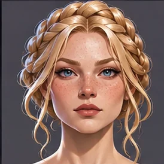
01 · Portrait féminin 01
Étude d’inspiration : observer les volumes, les valeurs et la direction des reflets.
Voir la recette associée : Carnation hâlée dorée — naturel ↗
AK 3rd Generation · atlas universel · bois, os, cornes, végétation, rouges, bleus, roches, carnations détaillées · triades · six valeurs · matériaux · ombres chromatiques · NMM · cristaux
Les boutons ci-dessous ouvrent les fiches déjà présentes dans cet atlas, sans approximation de nom ni recherche vague.
Planche intégrée au fichier, consultable hors connexion. Les couleurs de la planche sont illustratives : les recettes textuelles précisent les gestes.
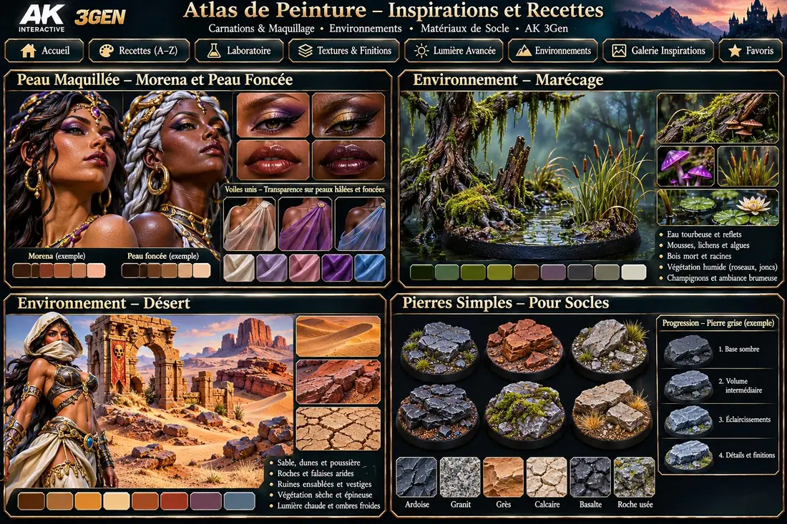
Référencement V3.2 : six étapes avec références AK 3Gen et propositions Citadel. Mélanges et correspondances proposés pour essai, sans validation indépendante de chaque référence ; comparer au nuancier et à tes pots.
Placement : Base sombre, brossage léger, puis 2–3 arêtes claires.
Citadel : Abaddon Black, Eshin Grey, Dawnstone, Administratum Grey, Karak Stone, Ushabti Bone ; selon la roche.
Audit de placement — Vérification de matière : augmenter le contraste aux cassures et diminuer la saturation des faces larges; garder des ombres dans les joints.
Placement : Peindre des plans plats en couches fines, arêtes cassées nettes.
Citadel : Abaddon Black, Eshin Grey, Dawnstone, Administratum Grey, Karak Stone, Ushabti Bone ; selon la roche.
Audit de placement — Vérification de matière : augmenter le contraste aux cassures et diminuer la saturation des faces larges; garder des ombres dans les joints.
Placement : Stippling de points irréguliers de tailles variées.
Citadel : Abaddon Black, Eshin Grey, Dawnstone, Administratum Grey, Karak Stone, Ushabti Bone ; selon la roche.
Audit de placement — Vérification de matière : augmenter le contraste aux cassures et diminuer la saturation des faces larges; garder des ombres dans les joints.
Placement : Bandes horizontales subtiles et éclaircissement des cassures.
Citadel : Abaddon Black, Eshin Grey, Dawnstone, Administratum Grey, Karak Stone, Ushabti Bone ; selon la roche.
Audit de placement — Vérification de matière : augmenter le contraste aux cassures et diminuer la saturation des faces larges; garder des ombres dans les joints.
Placement : Ne pas éclaircir toutes les faces; garder des masses noires.
Citadel : Abaddon Black, Eshin Grey, Dawnstone, Administratum Grey, Karak Stone, Ushabti Bone ; selon la roche.
Audit de placement — Vérification de matière : augmenter le contraste aux cassures et diminuer la saturation des faces larges; garder des ombres dans les joints.
Placement : Taches irrégulières, fissures fines et légères nuances verdâtres.
Citadel : Abaddon Black, Eshin Grey, Dawnstone, Administratum Grey, Karak Stone, Ushabti Bone ; selon la roche.
Audit de placement — Contrôle atelier : vérifier la montée en valeur sur une bande-test; la dernière étape est un accent local et non une couche générale.
Placement : Vernis satiné/brillant en bas de pierre; partie haute plutôt mate.
Citadel : Abaddon Black, Eshin Grey, Dawnstone, Administratum Grey, Karak Stone, Ushabti Bone ; selon la roche.
Audit de placement — Vérification de matière : augmenter le contraste aux cassures et diminuer la saturation des faces larges; garder des ombres dans les joints.
Placement : Peindre la roche d’abord; ajouter mousse en amas dans les creux.
Citadel : Abaddon Black, Eshin Grey, Dawnstone, Administratum Grey, Karak Stone, Ushabti Bone ; selon la roche.
Audit de placement — Vérification de matière : augmenter le contraste aux cassures et diminuer la saturation des faces larges; garder des ombres dans les joints.
Placement : Poussière au pied, cassures claires et ombres froides.
Citadel : Abaddon Black, Eshin Grey, Dawnstone, Administratum Grey, Karak Stone, Ushabti Bone ; selon la roche.
Audit de placement — Vérification de matière : augmenter le contraste aux cassures et diminuer la saturation des faces larges; garder des ombres dans les joints.
Placement : Accumuler la neige sur les surfaces horizontales, pas uniformément.
Citadel : Abaddon Black, Eshin Grey, Dawnstone, Administratum Grey, Karak Stone, Ushabti Bone ; selon la roche.
Audit de placement — Vérification de matière : augmenter le contraste aux cassures et diminuer la saturation des faces larges; garder des ombres dans les joints.
Référencement V3.2 : six étapes avec références AK 3Gen et propositions Citadel. Mélanges et correspondances proposés pour essai, sans validation indépendante de chaque référence ; comparer au nuancier et à tes pots.
Placement : Brossage sec sélectif, grains irréguliers et ombres sous les rochers.
Citadel : Rhinox Hide, Mournfang Brown, XV-88, Zamesi Desert, Ushabti Bone, Screaming Skull ; pour les roches rouges Doombull Brown.
Audit de placement — Vérification de texture : travailler par ponctuation irrégulière; éclaircir les bosses et laisser les creux plus froids.
Placement : Lumières sur crêtes, ombres plus froides au pied des dunes.
Citadel : Rhinox Hide, Mournfang Brown, XV-88, Zamesi Desert, Ushabti Bone, Screaming Skull ; pour les roches rouges Doombull Brown.
Audit de placement — Contrôle atelier : vérifier la montée en valeur sur une bande-test; la dernière étape est un accent local et non une couche générale.
Placement : Stippling, stries horizontales et cassures plus claires.
Citadel : Rhinox Hide, Mournfang Brown, XV-88, Zamesi Desert, Ushabti Bone, Screaming Skull ; pour les roches rouges Doombull Brown.
Audit de placement — Vérification de matière : augmenter le contraste aux cassures et diminuer la saturation des faces larges; garder des ombres dans les joints.
Placement : Croûtes claires en plaques et fissures brun gris.
Citadel : Rhinox Hide, Mournfang Brown, XV-88, Zamesi Desert, Ushabti Bone, Screaming Skull ; pour les roches rouges Doombull Brown.
Audit de placement — Contrôle atelier : vérifier la montée en valeur sur une bande-test; la dernière étape est un accent local et non une couche générale.
Placement : Arêtes sèches; pigment poussière au pied de la pierre.
Citadel : Rhinox Hide, Mournfang Brown, XV-88, Zamesi Desert, Ushabti Bone, Screaming Skull ; pour les roches rouges Doombull Brown.
Audit de placement — Vérification de matière : augmenter le contraste aux cassures et diminuer la saturation des faces larges; garder des ombres dans les joints.
Placement : Ambiance de fin de journée : conserver des ombres froides sans colorer toute la pierre en violet.
Citadel : Rhinox Hide, Mournfang Brown, XV-88, Zamesi Desert, Ushabti Bone, Screaming Skull ; pour les roches rouges Doombull Brown.
Audit de placement — Contrôle atelier : vérifier la montée en valeur sur une bande-test; la dernière étape est un accent local et non une couche générale.
Placement : Touffes irrégulières, extrémités desséchées et pieds poussiéreux.
Citadel : Rhinox Hide, Mournfang Brown, XV-88, Zamesi Desert, Ushabti Bone, Screaming Skull ; pour les roches rouges Doombull Brown.
Audit de placement — Contrôle atelier : vérifier la montée en valeur sur une bande-test; la dernière étape est un accent local et non une couche générale.
Placement : Ajouter poussière dans les creux et sable accumulé contre les murs.
Citadel : Rhinox Hide, Mournfang Brown, XV-88, Zamesi Desert, Ushabti Bone, Screaming Skull ; pour les roches rouges Doombull Brown.
Audit de placement — Contrôle atelier : vérifier la montée en valeur sur une bande-test; la dernière étape est un accent local et non une couche générale.
Référencement V3.2 : six étapes avec références AK 3Gen et propositions Citadel. Mélanges et correspondances proposés pour essai, sans validation indépendante de chaque référence ; comparer au nuancier et à tes pots.
Placement : Peindre le fond d’abord; réserver le clair aux reflets et remous, pas à toute l’eau.
Citadel : Dryad Bark, Rhinox Hide, Castellan Green, Deathworld Forest, Elysian Green, Nurgling Green ; pour les reflets Ulthuan Grey.
Audit de placement — Vérification de lumière : placer les reflets dans le sens de la surface de l’eau, et non comme des arêtes de pierre.
Placement : Ajouter des îlots d’algues irréguliers et des zones sombres entre les plaques.
Citadel : Dryad Bark, Rhinox Hide, Castellan Green, Deathworld Forest, Elysian Green, Nurgling Green ; pour les reflets Ulthuan Grey.
Audit de placement — Vérification de lumière : placer les reflets dans le sens de la surface de l’eau, et non comme des arêtes de pierre.
Placement : Laisser les parties immergées plus foncées; appliquer un vernis brillant uniquement aux zones mouillées.
Citadel : Dryad Bark, Rhinox Hide, Castellan Green, Deathworld Forest, Elysian Green, Nurgling Green ; pour les reflets Ulthuan Grey.
Audit de placement — Contrôle atelier : vérifier la montée en valeur sur une bande-test; la dernière étape est un accent local et non une couche générale.
Placement : Stippling en petits amas; ombres froides dans les creux.
Citadel : Dryad Bark, Rhinox Hide, Castellan Green, Deathworld Forest, Elysian Green, Nurgling Green ; pour les reflets Ulthuan Grey.
Audit de placement — Vérification de lumière : placer les reflets dans le sens de la surface de l’eau, et non comme des arêtes de pierre.
Placement : Éclaircir les tiges du côté de la lumière, garder le pied sombre.
Citadel : Dryad Bark, Rhinox Hide, Castellan Green, Deathworld Forest, Elysian Green, Nurgling Green ; pour les reflets Ulthuan Grey.
Audit de placement — Vérification de lumière : placer les reflets dans le sens de la surface de l’eau, et non comme des arêtes de pierre.
Placement : OSL léger sur les racines proches; ne pas éclairer tout le décor.
Citadel : Dryad Bark, Rhinox Hide, Castellan Green, Deathworld Forest, Elysian Green, Nurgling Green ; pour les reflets Ulthuan Grey.
Audit de placement — Contrôle atelier : vérifier la montée en valeur sur une bande-test; la dernière étape est un accent local et non une couche générale.
Placement : Texture granuleuse, creux sombres et touches de gloss dans les flaques.
Citadel : Dryad Bark, Rhinox Hide, Castellan Green, Deathworld Forest, Elysian Green, Nurgling Green ; pour les reflets Ulthuan Grey.
Audit de placement — Vérification de lumière : placer les reflets dans le sens de la surface de l’eau, et non comme des arêtes de pierre.
Placement : Filtre léger sur les plans éloignés, conserver un avant-plan contrasté.
Citadel : Dryad Bark, Rhinox Hide, Castellan Green, Deathworld Forest, Elysian Green, Nurgling Green ; pour les reflets Ulthuan Grey.
Audit de placement — Contrôle atelier : vérifier la montée en valeur sur une bande-test; la dernière étape est un accent local et non une couche générale.
Référencement V3.2 : six étapes avec références AK 3Gen et propositions Citadel. Mélanges et correspondances proposés pour essai, sans validation indépendante de chaque référence ; comparer au nuancier et à tes pots.
Placement : Blush pêche dilué; points chauds nez, pommettes, menton; garder les creux moins saturés.
Citadel : Rhinox Hide, Mournfang Brown, Skrag Brown, Cadian Fleshtone, Kislev Flesh, Ushabti Bone (sélection selon le sous-ton).
Audit de placement — Contrôle atelier : vérifier la montée en valeur sur une bande-test; la dernière étape est un accent local et non une couche générale.
Révision technique V4 — Établir une base couvrante à l’étape 3; glacer les ombres 1–2 sous la mâchoire, les ailes du nez et les orbites. Construire 4–5 sur front, pommettes et arête du nez; réserver 6 à quelques touches, sans blanchir toute la carnation.
Citadel : Rhinox Hide, Doombull Brown, Mournfang Brown, Skrag Brown, Cadian Fleshtone, Kislev Flesh, Flayed One Flesh; Reikland Fleshshade très dilué dans les creux chauds.
Placement : Glacis vert olive très léger dans les ombres, sans griser les lumières.
Citadel : Rhinox Hide, Mournfang Brown, Skrag Brown, Cadian Fleshtone, Kislev Flesh, Ushabti Bone (sélection selon le sous-ton).
Audit de placement — Contrôle atelier : vérifier la montée en valeur sur une bande-test; la dernière étape est un accent local et non une couche générale.
Révision technique V4 — Établir une base couvrante à l’étape 3; glacer les ombres 1–2 sous la mâchoire, les ailes du nez et les orbites. Construire 4–5 sur front, pommettes et arête du nez; réserver 6 à quelques touches, sans blanchir toute la carnation. Garder le vert en sous-ton subtil, jamais comme une couche verte uniforme.
Citadel : Rhinox Hide, Doombull Brown, Mournfang Brown, Skrag Brown, Cadian Fleshtone, Kislev Flesh, Flayed One Flesh; Reikland Fleshshade très dilué dans les creux chauds.
Placement : Éclaircir sur petites surfaces; conserver une grande plage de valeur sombre.
Citadel : Rhinox Hide, Mournfang Brown, Skrag Brown, Cadian Fleshtone, Kislev Flesh, Ushabti Bone (sélection selon le sous-ton).
Audit de placement — Contrôle atelier : vérifier la montée en valeur sur une bande-test; la dernière étape est un accent local et non une couche générale.
Révision technique V4 — Établir une base couvrante à l’étape 3; glacer les ombres 1–2 sous la mâchoire, les ailes du nez et les orbites. Construire 4–5 sur front, pommettes et arête du nez; réserver 6 à quelques touches, sans blanchir toute la carnation. Préserver au moins 60 % de la surface dans les valeurs 2–4 pour conserver la profondeur de la peau.
Citadel : Rhinox Hide, Doombull Brown, Mournfang Brown, Skrag Brown, Cadian Fleshtone, Kislev Flesh, Flayed One Flesh; Reikland Fleshshade très dilué dans les creux chauds.
Placement : Pour la lumière, préférer des reflets concentrés plutôt qu’un éclaircissement uniforme.
Citadel : Rhinox Hide, Mournfang Brown, Skrag Brown, Cadian Fleshtone, Kislev Flesh, Ushabti Bone (sélection selon le sous-ton).
Audit de placement — Contrôle atelier : vérifier la montée en valeur sur une bande-test; la dernière étape est un accent local et non une couche générale.
Révision technique V4 — Établir une base couvrante à l’étape 3; glacer les ombres 1–2 sous la mâchoire, les ailes du nez et les orbites. Construire 4–5 sur front, pommettes et arête du nez; réserver 6 à quelques touches, sans blanchir toute la carnation. Préserver au moins 60 % de la surface dans les valeurs 2–4 pour conserver la profondeur de la peau.
Citadel : Rhinox Hide, Doombull Brown, Mournfang Brown, Skrag Brown, Cadian Fleshtone, Kislev Flesh, Flayed One Flesh; Reikland Fleshshade très dilué dans les creux chauds.
Placement : Éviter le gris pur dans les lumières; renforcer la richesse avec des glacis chauds/froids.
Citadel : Rhinox Hide, Mournfang Brown, Skrag Brown, Cadian Fleshtone, Kislev Flesh, Ushabti Bone (sélection selon le sous-ton).
Audit de placement — Contrôle atelier : vérifier la montée en valeur sur une bande-test; la dernière étape est un accent local et non une couche générale.
Révision technique V4 — Établir une base couvrante à l’étape 3; glacer les ombres 1–2 sous la mâchoire, les ailes du nez et les orbites. Construire 4–5 sur front, pommettes et arête du nez; réserver 6 à quelques touches, sans blanchir toute la carnation. Préserver au moins 60 % de la surface dans les valeurs 2–4 pour conserver la profondeur de la peau.
Citadel : Rhinox Hide, Doombull Brown, Mournfang Brown, Skrag Brown, Cadian Fleshtone, Kislev Flesh, Flayed One Flesh; Reikland Fleshshade très dilué dans les creux chauds.
Placement : Glacer le blush sur les pommettes, nez et oreilles; ne pas tracer de bord net.
Citadel : Rhinox Hide, Mournfang Brown, Skrag Brown, Cadian Fleshtone, Kislev Flesh, Ushabti Bone (sélection selon le sous-ton).
Audit de placement — Vérification de lumière : placer les reflets dans le sens de la surface de l’eau, et non comme des arêtes de pierre.
Révision technique V4 — Traiter la recette comme une superposition translucide sur la carnation déjà terminée, non comme six couches opaques. Poser la teinte au centre, fondre les bords par glacis et rétablir les lumières de peau.
Citadel : Screamer Pink, Pink Horror, Emperor’s Children, Bugman’s Glow, Carroburg Crimson (glacis), Druchii Violet (ombres), Abaddon Black (trait fin).
Placement : Faire monter la saturation sans éclaircir fortement le blush.
Citadel : Rhinox Hide, Mournfang Brown, Skrag Brown, Cadian Fleshtone, Kislev Flesh, Ushabti Bone (sélection selon le sous-ton).
Audit de placement — Vérification de lumière : placer les reflets dans le sens de la surface de l’eau, et non comme des arêtes de pierre.
Révision technique V4 — Traiter la recette comme une superposition translucide sur la carnation déjà terminée, non comme six couches opaques. Poser la teinte au centre, fondre les bords par glacis et rétablir les lumières de peau.
Citadel : Screamer Pink, Pink Horror, Emperor’s Children, Bugman’s Glow, Carroburg Crimson (glacis), Druchii Violet (ombres), Abaddon Black (trait fin).
Placement : Dégradé sur la paupière; arête du sourcil et coin interne très discrets.
Citadel : Rhinox Hide, Mournfang Brown, Skrag Brown, Cadian Fleshtone, Kislev Flesh, Ushabti Bone (sélection selon le sous-ton).
Audit de placement — Vérification de lumière : placer les reflets dans le sens de la surface de l’eau, et non comme des arêtes de pierre.
Révision technique V4 — Traiter la recette comme une superposition translucide sur la carnation déjà terminée, non comme six couches opaques. Poser la teinte au centre, fondre les bords par glacis et rétablir les lumières de peau.
Citadel : Screamer Pink, Pink Horror, Emperor’s Children, Bugman’s Glow, Carroburg Crimson (glacis), Druchii Violet (ombres), Abaddon Black (trait fin).
Placement : Contraste fort sur la paupière mobile, mais préserver les volumes du visage.
Citadel : Rhinox Hide, Mournfang Brown, Skrag Brown, Cadian Fleshtone, Kislev Flesh, Ushabti Bone (sélection selon le sous-ton).
Audit de placement — Vérification de lumière : placer les reflets dans le sens de la surface de l’eau, et non comme des arêtes de pierre.
Révision technique V4 — Traiter la recette comme une superposition translucide sur la carnation déjà terminée, non comme six couches opaques. Poser la teinte au centre, fondre les bords par glacis et rétablir les lumières de peau.
Citadel : Screamer Pink, Pink Horror, Emperor’s Children, Bugman’s Glow, Carroburg Crimson (glacis), Druchii Violet (ombres), Abaddon Black (trait fin).
Placement : Eye-liner fin brun-noir; petites zones claires au coin interne.
Citadel : Rhinox Hide, Mournfang Brown, Skrag Brown, Cadian Fleshtone, Kislev Flesh, Ushabti Bone (sélection selon le sous-ton).
Audit de placement — Vérification de lumière : placer les reflets dans le sens de la surface de l’eau, et non comme des arêtes de pierre.
Révision technique V4 — Traiter la recette comme une superposition translucide sur la carnation déjà terminée, non comme six couches opaques. Poser la teinte au centre, fondre les bords par glacis et rétablir les lumières de peau.
Citadel : Screamer Pink, Pink Horror, Emperor’s Children, Bugman’s Glow, Carroburg Crimson (glacis), Druchii Violet (ombres), Abaddon Black (trait fin).
Placement : La lèvre supérieure reste souvent plus sombre; reflet sur la lèvre inférieure.
Citadel : Rhinox Hide, Mournfang Brown, Skrag Brown, Cadian Fleshtone, Kislev Flesh, Ushabti Bone (sélection selon le sous-ton).
Audit de placement — Vérification de lumière : placer les reflets dans le sens de la surface de l’eau, et non comme des arêtes de pierre.
Révision technique V4 — Traiter la recette comme une superposition translucide sur la carnation déjà terminée, non comme six couches opaques. Poser la teinte au centre, fondre les bords par glacis et rétablir les lumières de peau. La lèvre supérieure reste généralement plus sombre; le reflet humide se limite au centre de la lèvre inférieure.
Citadel : Screamer Pink, Pink Horror, Emperor’s Children, Bugman’s Glow, Carroburg Crimson (glacis), Druchii Violet (ombres), Abaddon Black (trait fin).
Placement : Un reflet blanc minuscule seulement pour une finition gloss.
Citadel : Rhinox Hide, Mournfang Brown, Skrag Brown, Cadian Fleshtone, Kislev Flesh, Ushabti Bone (sélection selon le sous-ton).
Audit de placement — Vérification de lumière : placer les reflets dans le sens de la surface de l’eau, et non comme des arêtes de pierre.
Révision technique V4 — Traiter la recette comme une superposition translucide sur la carnation déjà terminée, non comme six couches opaques. Poser la teinte au centre, fondre les bords par glacis et rétablir les lumières de peau. La lèvre supérieure reste généralement plus sombre; le reflet humide se limite au centre de la lèvre inférieure.
Citadel : Screamer Pink, Pink Horror, Emperor’s Children, Bugman’s Glow, Carroburg Crimson (glacis), Druchii Violet (ombres), Abaddon Black (trait fin).
Placement : Finition mate : éclaircir par volumes; gloss : placer 1–2 éclats nets.
Citadel : Rhinox Hide, Mournfang Brown, Skrag Brown, Cadian Fleshtone, Kislev Flesh, Ushabti Bone (sélection selon le sous-ton).
Audit de placement — Vérification de lumière : placer les reflets dans le sens de la surface de l’eau, et non comme des arêtes de pierre.
Révision technique V4 — Traiter la recette comme une superposition translucide sur la carnation déjà terminée, non comme six couches opaques. Poser la teinte au centre, fondre les bords par glacis et rétablir les lumières de peau. La lèvre supérieure reste généralement plus sombre; le reflet humide se limite au centre de la lèvre inférieure.
Citadel : Screamer Pink, Pink Horror, Emperor’s Children, Bugman’s Glow, Carroburg Crimson (glacis), Druchii Violet (ombres), Abaddon Black (trait fin).
Placement : Tracer l’eye-liner très fin, surtout le coin externe; laisser la ligne des cils lisible.
Citadel : Rhinox Hide, Mournfang Brown, Skrag Brown, Cadian Fleshtone, Kislev Flesh, Ushabti Bone (sélection selon le sous-ton).
Audit de placement — Vérification de lumière : placer les reflets dans le sens de la surface de l’eau, et non comme des arêtes de pierre.
Révision technique V4 — Traiter la recette comme une superposition translucide sur la carnation déjà terminée, non comme six couches opaques. Poser la teinte au centre, fondre les bords par glacis et rétablir les lumières de peau. Employer une pointe fine; éviter un trait noir continu et trop épais à l’échelle 28–32 mm.
Citadel : Screamer Pink, Pink Horror, Emperor’s Children, Bugman’s Glow, Carroburg Crimson (glacis), Druchii Violet (ombres), Abaddon Black (trait fin).
Placement : Lumière de coucher de soleil : ombres froides et reflets chauds sur plans exposés.
Citadel : Rhinox Hide, Mournfang Brown, Skrag Brown, Cadian Fleshtone, Kislev Flesh, Ushabti Bone (sélection selon le sous-ton).
Audit de placement — Vérification de lumière : placer les reflets dans le sens de la surface de l’eau, et non comme des arêtes de pierre.
Révision technique V4 — Établir une base couvrante à l’étape 3; glacer les ombres 1–2 sous la mâchoire, les ailes du nez et les orbites. Construire 4–5 sur front, pommettes et arête du nez; réserver 6 à quelques touches, sans blanchir toute la carnation. Préserver au moins 60 % de la surface dans les valeurs 2–4 pour conserver la profondeur de la peau.
Citadel : Rhinox Hide, Doombull Brown, Mournfang Brown, Skrag Brown, Cadian Fleshtone, Kislev Flesh, Flayed One Flesh; Reikland Fleshshade très dilué dans les creux chauds.
Placement : Lumière lunaire : filtrer au bleu seulement les plans exposés.
Citadel : Rhinox Hide, Mournfang Brown, Skrag Brown, Cadian Fleshtone, Kislev Flesh, Ushabti Bone (sélection selon le sous-ton).
Audit de placement — Vérification de lumière : placer les reflets dans le sens de la surface de l’eau, et non comme des arêtes de pierre.
Révision technique V4 — Établir une base couvrante à l’étape 3; glacer les ombres 1–2 sous la mâchoire, les ailes du nez et les orbites. Construire 4–5 sur front, pommettes et arête du nez; réserver 6 à quelques touches, sans blanchir toute la carnation. Refroidir les ombres au violet/bleu, mais garder les zones éclairées légèrement chaudes pour préserver le caractère vivant. Préserver au moins 60 % de la surface dans les valeurs 2–4 pour conserver la profondeur de la peau.
Citadel : Rhinox Hide, Doombull Brown, Mournfang Brown, Skrag Brown, Cadian Fleshtone, Kislev Flesh, Flayed One Flesh; Reikland Fleshshade très dilué dans les creux chauds.
Placement : Laisser la peau visible sur les zones tendues; accentuer les plis superposés.
Citadel : Rhinox Hide, Mournfang Brown, Skrag Brown, Cadian Fleshtone, Kislev Flesh, Ushabti Bone (sélection selon le sous-ton).
Voile : peindre la peau avec la progression ci-dessus, puis glacer très légèrement la couleur du voile (AK11004 Ivory / AK11003 White Grey / AK11069 Pastel Violet / AK11190 Dark Sea Blue / AK11029 Black selon le titre). Rehausser seulement les plis et bords du tissu.
Audit de placement — Vérification de lumière : placer les reflets dans le sens de la surface de l’eau, et non comme des arêtes de pierre.
Révision technique V4 — Établir une base couvrante à l’étape 3; glacer les ombres 1–2 sous la mâchoire, les ailes du nez et les orbites. Construire 4–5 sur front, pommettes et arête du nez; réserver 6 à quelques touches, sans blanchir toute la carnation.
Citadel : Rhinox Hide, Doombull Brown, Mournfang Brown, Skrag Brown, Cadian Fleshtone, Kislev Flesh, Flayed One Flesh; Reikland Fleshshade très dilué dans les creux chauds.
Placement : Sur peau sombre, ne pas opacifier la zone centrale : préserver le contraste de transparence.
Citadel : Rhinox Hide, Mournfang Brown, Skrag Brown, Cadian Fleshtone, Kislev Flesh, Ushabti Bone (sélection selon le sous-ton).
Voile : peindre la peau avec la progression ci-dessus, puis glacer très légèrement la couleur du voile (AK11004 Ivory / AK11003 White Grey / AK11069 Pastel Violet / AK11190 Dark Sea Blue / AK11029 Black selon le titre). Rehausser seulement les plis et bords du tissu.
Audit de placement — Vérification de lumière : placer les reflets dans le sens de la surface de l’eau, et non comme des arêtes de pierre.
Révision technique V4 — Établir une base couvrante à l’étape 3; glacer les ombres 1–2 sous la mâchoire, les ailes du nez et les orbites. Construire 4–5 sur front, pommettes et arête du nez; réserver 6 à quelques touches, sans blanchir toute la carnation. Préserver au moins 60 % de la surface dans les valeurs 2–4 pour conserver la profondeur de la peau.
Citadel : Rhinox Hide, Doombull Brown, Mournfang Brown, Skrag Brown, Cadian Fleshtone, Kislev Flesh, Flayed One Flesh; Reikland Fleshshade très dilué dans les creux chauds.
Placement : Voile très léger : utiliser plusieurs glacis séchés plutôt qu’une couche opaque.
Citadel : Rhinox Hide, Mournfang Brown, Skrag Brown, Cadian Fleshtone, Kislev Flesh, Ushabti Bone (sélection selon le sous-ton).
Voile : peindre la peau avec la progression ci-dessus, puis glacer très légèrement la couleur du voile (AK11004 Ivory / AK11003 White Grey / AK11069 Pastel Violet / AK11190 Dark Sea Blue / AK11029 Black selon le titre). Rehausser seulement les plis et bords du tissu.
Audit de placement — Vérification de lumière : placer les reflets dans le sens de la surface de l’eau, et non comme des arêtes de pierre.
Révision technique V4 — Établir une base couvrante à l’étape 3; glacer les ombres 1–2 sous la mâchoire, les ailes du nez et les orbites. Construire 4–5 sur front, pommettes et arête du nez; réserver 6 à quelques touches, sans blanchir toute la carnation.
Citadel : Rhinox Hide, Doombull Brown, Mournfang Brown, Skrag Brown, Cadian Fleshtone, Kislev Flesh, Flayed One Flesh; Reikland Fleshshade très dilué dans les creux chauds.
Placement : Les zones doublées du voile sont plus opaques et plus bleues.
Citadel : Rhinox Hide, Mournfang Brown, Skrag Brown, Cadian Fleshtone, Kislev Flesh, Ushabti Bone (sélection selon le sous-ton).
Voile : peindre la peau avec la progression ci-dessus, puis glacer très légèrement la couleur du voile (AK11004 Ivory / AK11003 White Grey / AK11069 Pastel Violet / AK11190 Dark Sea Blue / AK11029 Black selon le titre). Rehausser seulement les plis et bords du tissu.
Audit de placement — Vérification de lumière : placer les reflets dans le sens de la surface de l’eau, et non comme des arêtes de pierre.
Révision technique V4 — Établir une base couvrante à l’étape 3; glacer les ombres 1–2 sous la mâchoire, les ailes du nez et les orbites. Construire 4–5 sur front, pommettes et arête du nez; réserver 6 à quelques touches, sans blanchir toute la carnation. Préserver au moins 60 % de la surface dans les valeurs 2–4 pour conserver la profondeur de la peau.
Citadel : Rhinox Hide, Doombull Brown, Mournfang Brown, Skrag Brown, Cadian Fleshtone, Kislev Flesh, Flayed One Flesh; Reikland Fleshshade très dilué dans les creux chauds.
Placement : Un voile noir transparent ne doit pas devenir une couche noire opaque.
Citadel : Rhinox Hide, Mournfang Brown, Skrag Brown, Cadian Fleshtone, Kislev Flesh, Ushabti Bone (sélection selon le sous-ton).
Voile : peindre la peau avec la progression ci-dessus, puis glacer très légèrement la couleur du voile (AK11004 Ivory / AK11003 White Grey / AK11069 Pastel Violet / AK11190 Dark Sea Blue / AK11029 Black selon le titre). Rehausser seulement les plis et bords du tissu.
Audit de placement — Vérification de lumière : placer les reflets dans le sens de la surface de l’eau, et non comme des arêtes de pierre.
Révision technique V4 — Établir une base couvrante à l’étape 3; glacer les ombres 1–2 sous la mâchoire, les ailes du nez et les orbites. Construire 4–5 sur front, pommettes et arête du nez; réserver 6 à quelques touches, sans blanchir toute la carnation.
Citadel : Rhinox Hide, Doombull Brown, Mournfang Brown, Skrag Brown, Cadian Fleshtone, Kislev Flesh, Flayed One Flesh; Reikland Fleshshade très dilué dans les creux chauds.
Placement : Accentuer les chevauchements et les attaches du tissu.
Citadel : Rhinox Hide, Mournfang Brown, Skrag Brown, Cadian Fleshtone, Kislev Flesh, Ushabti Bone (sélection selon le sous-ton).
Voile : peindre la peau avec la progression ci-dessus, puis glacer très légèrement la couleur du voile (AK11004 Ivory / AK11003 White Grey / AK11069 Pastel Violet / AK11190 Dark Sea Blue / AK11029 Black selon le titre). Rehausser seulement les plis et bords du tissu.
Audit de placement — Vérification de lumière : placer les reflets dans le sens de la surface de l’eau, et non comme des arêtes de pierre.
Révision technique V4 — Établir une base couvrante à l’étape 3; glacer les ombres 1–2 sous la mâchoire, les ailes du nez et les orbites. Construire 4–5 sur front, pommettes et arête du nez; réserver 6 à quelques touches, sans blanchir toute la carnation. Préserver au moins 60 % de la surface dans les valeurs 2–4 pour conserver la profondeur de la peau.
Citadel : Rhinox Hide, Doombull Brown, Mournfang Brown, Skrag Brown, Cadian Fleshtone, Kislev Flesh, Flayed One Flesh; Reikland Fleshshade très dilué dans les creux chauds.
Trois atlas distincts : maquillage du visage, construction des motifs textiles et rendu semi-transparent. Les six valeurs servent de repères de peinture et ne doivent pas nécessairement être superposées dans cet ordre.
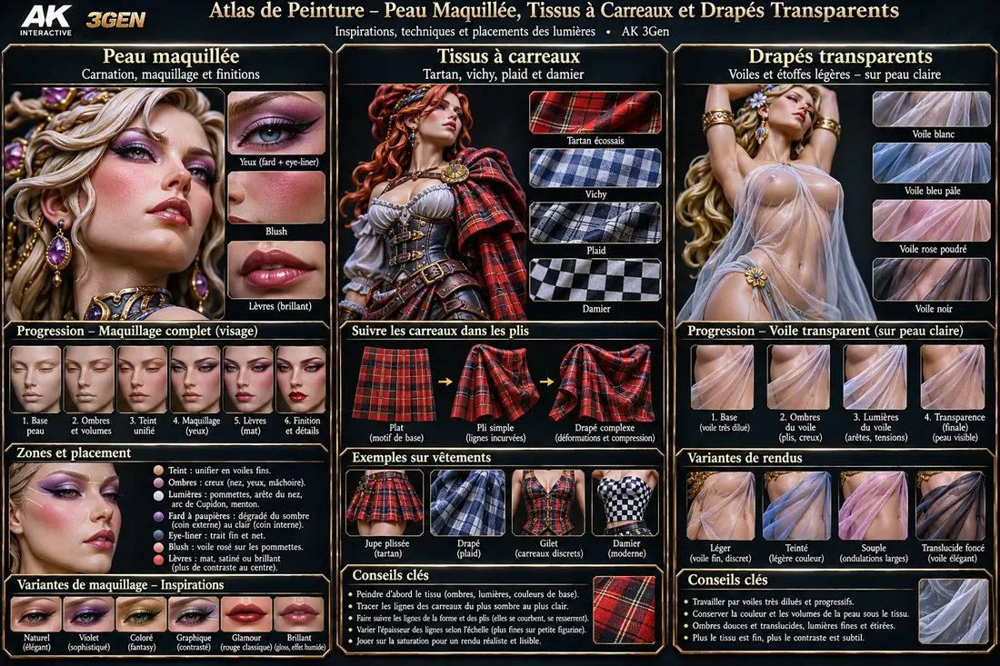
Illustration artistique : les recettes textuelles ci-dessous prévalent sur les couleurs représentées. Vérifier les références AK avant achat.
Recettes de peinture expérimentales, à ajuster selon la carnation, la sculpture et la dilution. « 1:5 » signifie une part de peinture pour cinq parts de médium/diluant, comme point de départ.
Atlas pratique de foudre, énergie, simili cuir moderne, vinyle, cuir verni, satin, jupes et voiles transparents. Les six valeurs décrivent des teintes à répartir sur le volume : il ne faut pas nécessairement les appliquer en bandes successives.
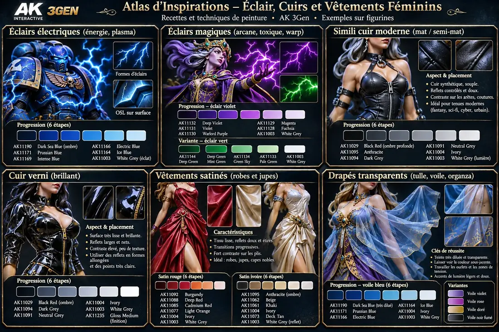
Illustration d’inspiration : certaines références imprimées dans l’image peuvent être erronées. Les recettes textuelles sont indicatives, et les codes/noms AK doivent être recoupés avec ton catalogue.
Fiches artistiques non testées individuellement. Pour les voiles, la teinte sous-jacente doit rester visible ; pour le cuir verni, les reflets blancs sont étroits et nets ; pour le satin, ils suivent les plis.
Recettes de figurines, socles et décors : flammes classiques ou magiques, magma, métal chauffé, cendres, fumée et éclairages OSL. Les six valeurs décrivent des zones visuelles, pas forcément six couches successives.
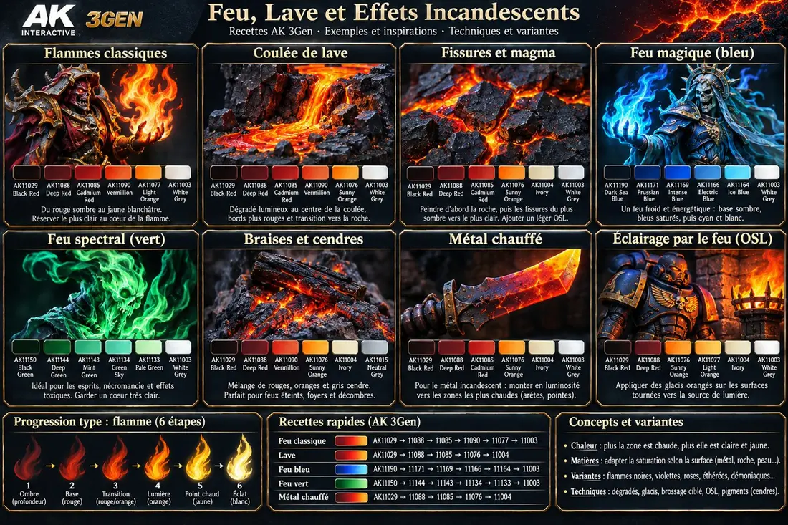
Planche d’inspiration générée. Les codes et noms imprimés dans l’image ne sont pas tous vérifiés : privilégier les références et précautions indiquées dans les fiches ci-dessous.
Les recettes sont des propositions d’atelier non testées individuellement. Pour les flammes, les zones les plus claires sont généralement les plus chaudes ; les feux fantastiques peuvent inverser cette convention pour un effet stylisé.
12 fiches de plumages, de volumes et de lumière, classées dans Peaux & vivant ; les armes restent dans leur propre rubrique.
Palettes AK et Citadel : AK : Dark Sea Blue, Neutral Grey, White Grey ; Citadel : The Fang, Celestra Grey, Ulthuan Grey, White Scar
Placement de lumière : Racines sombres ; lumière sur les bords des couvertures et les extrémités des rémiges.
Angles et variantes : Dessus : éclaircir les chevauchements ; dessous : garder davantage de gris.
Placement : ombre bleu-gris aux racines, pointes blanches sur les seules rémiges éclairées
Citadel (palette alternative, non équivalence stricte) : The Fang, Celestra Grey, Ulthuan Grey, White Scar
Méthode : Ne pas poser les six teintes en aplats opaques successifs. Utiliser les transitions par mélanges ou glacis; garder les derniers accents sur une petite surface.
Palettes AK et Citadel : AK : Burnt Umber, Deck Tan, Ivory ; Citadel : Rhinox Hide, Zandri Dust, Ushabti Bone, Screaming Skull
Placement de lumière : Accentuer la séparation entre les rangées ; ombre plus chaude à la base.
Angles et variantes : Lumière de désert : reflet ocre discret sur le dessous.
Placement : sous-plumes crème; ombres ocres aux chevauchements, pas de contour noir
Citadel (palette alternative, non équivalence stricte) : Steel Legion Drab, Rakarth Flesh, Screaming Skull, White Scar
Méthode : Ne pas poser les six teintes en aplats opaques successifs. Utiliser les transitions par mélanges ou glacis; garder les derniers accents sur une petite surface.
Palettes AK et Citadel : AK : Black, Dark Sea Blue, Neutral Grey ; Citadel : Abaddon Black, Dark Reaper, Thunderhawk Blue, Fenrisian Grey
Placement de lumière : Éclaircir des lignes fines sur les nervures, sans blanchir toutes les plumes.
Angles et variantes : À contre-jour : une bordure froide très étroite.
Placement : reflets bleu pétrole localisés sur les barbes, noirs préservés dans les recouvrements
Citadel (palette alternative, non équivalence stricte) : Abaddon Black, Corvus Black, Dark Reaper, Thunderhawk Blue
Méthode : Ne pas poser les six teintes en aplats opaques successifs. Utiliser les transitions par mélanges ou glacis; garder les derniers accents sur une petite surface.
Palettes AK et Citadel : AK : Burnt Umber, Chocolate, Sandy Brown ; Citadel : Rhinox Hide, Mournfang Brown, Skrag Brown, Ushabti Bone
Placement de lumière : Marquer les barres sombres irrégulières des rémiges et le duvet clair.
Angles et variantes : Dessous : davantage de beige et des bandes plus nettes.
Placement : stries claires suivant le rachis; ombres foncées entre rémiges
Citadel (palette alternative, non équivalence stricte) : Rhinox Hide, Dryad Bark, Mournfang Brown, Ushabti Bone
Méthode : Ne pas poser les six teintes en aplats opaques successifs. Utiliser les transitions par mélanges ou glacis; garder les derniers accents sur une petite surface.
Palettes AK et Citadel : AK : Chocolate, Ochre, Ivory ; Citadel : Rhinox Hide, XV-88, Balor Brown, Dorn Yellow
Placement de lumière : La lumière suit les écailles de plumes ; ne pas éclaircir toutes les pointes pareil.
Angles et variantes : Version divine : quelques éclats presque blancs.
Placement : plumes jaune-or par touches; brun profond dans les interstices
Citadel (palette alternative, non équivalence stricte) : Rhinox Hide, XV-88, Averland Sunset, Flash Gitz Yellow
Méthode : Ne pas poser les six teintes en aplats opaques successifs. Utiliser les transitions par mélanges ou glacis; garder les derniers accents sur une petite surface.
Palettes AK et Citadel : AK : Dark Sea Blue, Deep Green, White Grey ; Citadel : Naggaroth Night, Xereus Purple, Sotek Green, Baharroth Blue
Placement de lumière : Glacis bleu et violet alternés selon les groupes de plumes.
Angles et variantes : Orienter les reflets vers la source ; les plumes voisines peuvent avoir des températures différentes.
Placement : bandes irisées étroites sur les plumes, ombre violette froide
Citadel (palette alternative, non équivalence stricte) : Naggaroth Night, Kantor Blue, Caledor Sky, Fenrisian Grey
Méthode : Ne pas poser les six teintes en aplats opaques successifs. Utiliser les transitions par mélanges ou glacis; garder les derniers accents sur une petite surface.
Palettes AK et Citadel : AK : Deep Red, Vermillion, Light Orange, Ivory ; Citadel : Khorne Red, Evil Sunz Scarlet, Troll Slayer Orange, Yriel Yellow
Placement de lumière : Le cœur des flammes/plumes est clair ; les pointes extérieures peuvent rester sombres.
Angles et variantes : OSL orangé sur les épaules et les plumes proches.
Placement : source chaude au cœur des plumes; bords externes rouges sombres
Citadel (palette alternative, non équivalence stricte) : Khorne Red, Evil Sunz Scarlet, Troll Slayer Orange, Flash Gitz Yellow
Méthode : Ne pas poser les six teintes en aplats opaques successifs. Utiliser les transitions par mélanges ou glacis; garder les derniers accents sur une petite surface.
Palettes AK et Citadel : AK : Dark Sea Blue, Ice Blue, White Grey ; Citadel : Kantor Blue, Fenrisian Grey, Blue Horror, White Scar
Placement de lumière : Contrastes froids dans les interstices ; petites facettes translucides aux extrémités.
Angles et variantes : Neige : lumière zénithale diffuse, creux bleu violacé.
Placement : creux bleus saturés, arêtes givrées blanches, éclats anguleux
Citadel (palette alternative, non équivalence stricte) : Kantor Blue, Lothern Blue, Blue Horror, White Scar
Méthode : Ne pas poser les six teintes en aplats opaques successifs. Utiliser les transitions par mélanges ou glacis; garder les derniers accents sur une petite surface.
Palettes AK et Citadel : AK : Neutral Grey, Ivory, White Grey ; Citadel : Dawnstone, Administratum Grey, Ulthuan Grey, White Scar
Placement de lumière : Tracer le rachis, puis des barbes légèrement obliques, sans tout cerner.
Angles et variantes : Une face de la plume plus claire que l’autre.
Placement : éclaircir barbes individuellement, conserver la tige en valeur moyenne
Citadel (palette alternative, non équivalence stricte) : Mechanicus Standard Grey, Dawnstone, Ulthuan Grey, White Scar
Méthode : Ne pas poser les six teintes en aplats opaques successifs. Utiliser les transitions par mélanges ou glacis; garder les derniers accents sur une petite surface.
Palettes AK et Citadel : AK : Dark Sea Blue, Deep Green, Lime Green ; Citadel : Incubi Darkness, Sotek Green, Kabalite Green, Moot Green
Placement de lumière : Placer l’ocelle sur la pointe ; transitions en arcs concentriques.
Angles et variantes : Finition satinée localisée, pas de vernis uniforme.
Placement : ocelle contrasté, reflets turquoise ponctuels et tige sombre
Citadel (palette alternative, non équivalence stricte) : Abaddon Black, Incubi Darkness, Sotek Green, Temple Guard Blue
Méthode : Ne pas poser les six teintes en aplats opaques successifs. Utiliser les transitions par mélanges ou glacis; garder les derniers accents sur une petite surface.
Palettes AK et Citadel : AK : Chocolate, Sandy Brown, Ivory ; Citadel : Rhinox Hide, Mournfang Brown, Karak Stone, Screaming Skull
Placement de lumière : Volumes du dos, ventre et tête distincts ; motifs en petites stries.
Angles et variantes : Bec et griffes en TMP ou gris os.
Placement : brun sur le dos, crème sous le ventre; pas de mélange uniforme
Citadel (palette alternative, non équivalence stricte) : Rhinox Hide, Mournfang Brown, Zandri Dust, Screaming Skull
Méthode : Ne pas poser les six teintes en aplats opaques successifs. Utiliser les transitions par mélanges ou glacis; garder les derniers accents sur une petite surface.
Palettes AK et Citadel : AK : Dark Sea Blue, Deep Green, White Grey ; Citadel : Kantor Blue, Sotek Green, Temple Guard Blue, Baharroth Blue
Placement de lumière : Accentuer tête, ailes et queue avec des valeurs différentes.
Angles et variantes : Ajouter un contraste orange au bec ou à la gorge.
Placement : plumes en facettes saturées, ombres noir-vert, bec séparé
Citadel (palette alternative, non équivalence stricte) : Incubi Darkness, Sotek Green, Temple Guard Blue, Baharroth Blue
Méthode : Ne pas poser les six teintes en aplats opaques successifs. Utiliser les transitions par mélanges ou glacis; garder les derniers accents sur une petite surface.
Recettes à six étapes, placements des lumières et variations selon l’angle de vue. Les couleurs AK et Citadel sont des suggestions d’atelier : ce ne sont pas des équivalences fabricant. Les codes AK ne sont pas attribués sans vérification.
Palettes AK et Citadel : AK : Black, Neutral Grey, White Grey ; Citadel : Abaddon Black, Eshin Grey, Dawnstone, White Scar
Placement de lumière : Sur chaque face, créer une bande sombre adjacente à une bande claire ; reflet très net près de l’arête.
Angles et variantes : Face : bandes en diagonale ; profil : liseré brillant très fin.
Placement : ruptures franches clair/sombre sur les plans de la lame, ligne spéculaire très fine
Citadel (palette alternative, non équivalence stricte) : Abaddon Black, Eshin Grey, Dawnstone, White Scar
Méthode : Ne pas poser les six teintes en aplats opaques successifs. Utiliser les transitions par mélanges ou glacis; garder les derniers accents sur une petite surface.
Palettes AK et Citadel : AK : métalliques acier/argent 3Gen ; Citadel : Iron Warriors, Leadbelcher, Ironbreaker, Stormhost Silver
Placement de lumière : Lavis sombre dans les creux, reprise des pans avec métal clair, micro-éclats sur le fil.
Angles et variantes : Sous lumière chaude : glacis brun très fin sur une face.
Placement : véritables métalliques, lavis noir ciblé au ricasso et reflet argent sur le fil
Citadel (palette alternative, non équivalence stricte) : Iron Warriors, Leadbelcher, Ironbreaker, Stormhost Silver
Méthode : Ne pas poser les six teintes en aplats opaques successifs. Utiliser les transitions par mélanges ou glacis; garder les derniers accents sur une petite surface.
Palettes AK et Citadel : AK : Dark Sea Blue, Neutral Grey, White Grey ; Citadel : Dark Reaper, Thunderhawk Blue, Fenrisian Grey, White Scar
Placement de lumière : Faire suivre la bande de lumière à la courbe du dos ; bord interne plus sombre.
Angles et variantes : De trois-quarts, déplacer la bande de reflet, ne pas la copier de face.
Placement : bande de lumière courbe, alternance sombre/clair, fil blanc discontinu
Citadel (palette alternative, non équivalence stricte) : Abaddon Black, Dark Reaper, Fenrisian Grey, White Scar
Méthode : Ne pas poser les six teintes en aplats opaques successifs. Utiliser les transitions par mélanges ou glacis; garder les derniers accents sur une petite surface.
Palettes AK et Citadel : AK : Black, Dark Sea Blue, White Grey ; Citadel : Abaddon Black, Naggaroth Night, Eshin Grey, White Scar
Placement de lumière : Peindre des éclats triangulaires, très peu de valeurs intermédiaires.
Angles et variantes : Reflets spéculaires durs, surface polie.
Placement : plans noirs majoritaires; éclats violets et micro-lignes blanches
Citadel (palette alternative, non équivalence stricte) : Abaddon Black, Naggaroth Night, Dark Reaper, White Scar
Méthode : Ne pas poser les six teintes en aplats opaques successifs. Utiliser les transitions par mélanges ou glacis; garder les derniers accents sur une petite surface.
Palettes AK et Citadel : AK : Burnt Umber, Ochre, Ivory ; Citadel : Rhinox Hide, Skrag Brown, Balor Brown, Screaming Skull
Placement de lumière : Reflets chauds plus larges que sur l’acier ; ombres vertes optionnelles.
Angles et variantes : TMP possible avec Balthasar Gold, Brass Scorpion, Sycorax Bronze.
Placement : métal chaud, oxydation dans les joints seulement, éclats clairs sur arêtes
Citadel (palette alternative, non équivalence stricte) : Warplock Bronze, Balthasar Gold, Hashut Copper, Stormhost Silver
Méthode : Ne pas poser les six teintes en aplats opaques successifs. Utiliser les transitions par mélanges ou glacis; garder les derniers accents sur une petite surface.
Palettes AK et Citadel : AK : Deep Red, Vermillion, Light Orange, Ivory ; Citadel : Khorne Red, Evil Sunz Scarlet, Troll Slayer Orange, Flash Gitz Yellow
Placement de lumière : Réserver le blanc au noyau des fissures et aux zones les plus chaudes.
Angles et variantes : Bords plus froids ou noircis, selon l’effet.
Placement : transition inversée : blanc-jaune à la source, rouge et noir à la périphérie
Citadel (palette alternative, non équivalence stricte) : Abaddon Black, Khorne Red, Troll Slayer Orange, White Scar
Méthode : Ne pas poser les six teintes en aplats opaques successifs. Utiliser les transitions par mélanges ou glacis; garder les derniers accents sur une petite surface.
Palettes AK et Citadel : AK : Dark Sea Blue, Ice Blue, White Grey ; Citadel : Kantor Blue, Caledor Sky, Lothern Blue, White Scar
Placement de lumière : Éclairs ramifiés fins ; bande de lumière au centre de la lame.
Angles et variantes : OSL discret sur la garde.
Placement : fil et runes quasi blancs, halo turquoise diffus uniquement autour de la source
Citadel (palette alternative, non équivalence stricte) : Kantor Blue, Caledor Sky, Lothern Blue, White Scar
Méthode : Ne pas poser les six teintes en aplats opaques successifs. Utiliser les transitions par mélanges ou glacis; garder les derniers accents sur une petite surface.
Palettes AK et Citadel : AK : Dark Green, Olive Green, Lime Green, Pale Yellow ; Citadel : Caliban Green, Warpstone Glow, Moot Green, Dorn Yellow
Placement de lumière : Conserver le vert sombre dans les contre-faces, ligne claire dans la rainure.
Angles et variantes : Variante acide : glacis jaune sur le fil.
Placement : lueur jaune-verte sur fil et inscriptions, creux noir-vert
Citadel (palette alternative, non équivalence stricte) : Caliban Green, Warpstone Glow, Moot Green, White Scar
Méthode : Ne pas poser les six teintes en aplats opaques successifs. Utiliser les transitions par mélanges ou glacis; garder les derniers accents sur une petite surface.
Palettes AK et Citadel : AK : Dark Sea Blue, White Grey ; Citadel : Naggaroth Night, Xereus Purple, Genestealer Purple, White Scar
Placement de lumière : Runes en blanc violacé, halo très fin, faces moins saturées.
Angles et variantes : À l’aéro : voile violet autour des runes, puis reprendre les traits.
Placement : runes au blanc, halo mauve progressif sur la surface voisine
Citadel (palette alternative, non équivalence stricte) : Naggaroth Night, Xereus Purple, Genestealer Purple, White Scar
Méthode : Ne pas poser les six teintes en aplats opaques successifs. Utiliser les transitions par mélanges ou glacis; garder les derniers accents sur une petite surface.
Palettes AK et Citadel : AK : Burnt Umber, Vermillion, Neutral Grey ; Citadel : Rhinox Hide, Mournfang Brown, Ryza Rust, Ironbreaker
Placement de lumière : Rouille dans les creux ; métal vif seulement sur les zones frottées.
Angles et variantes : Marteler la texture par pointillisme, pas par dégradé lisse.
Placement : rouille en piqûres et creux; garder du métal nu sur les zones de frottement
Citadel (palette alternative, non équivalence stricte) : Rhinox Hide, Skrag Brown, Ryza Rust, Leadbelcher
Méthode : Ne pas poser les six teintes en aplats opaques successifs. Utiliser les transitions par mélanges ou glacis; garder les derniers accents sur une petite surface.
Palettes AK et Citadel : AK : Black, Neutral Grey, White Grey ; Citadel : Abaddon Black, Dawnstone, Administratum Grey, White Scar
Placement de lumière : Peindre le métal puis des lignes ondulées à faible contraste, glacis pour intégrer.
Angles et variantes : Les motifs suivent la longueur et se déforment vers la pointe.
Placement : motif ondulé fin et irrégulier, sans perdre la lecture des plans NMM
Citadel (palette alternative, non équivalence stricte) : Abaddon Black, Eshin Grey, Dawnstone, White Scar
Méthode : Ne pas poser les six teintes en aplats opaques successifs. Utiliser les transitions par mélanges ou glacis; garder les derniers accents sur une petite surface.
Palettes AK et Citadel : AK : Chocolate, Sandy Brown, Ivory ; Citadel : Rhinox Hide, Zandri Dust, Ushabti Bone, Screaming Skull
Placement de lumière : Creux organiques sombres ; nervures dans le sens de la lame.
Angles et variantes : Éclats moins spéculaires que le métal.
Placement : striures longitudinales, pointes ivoire, creux bruns près de la garde
Citadel (palette alternative, non équivalence stricte) : Rhinox Hide, Rakarth Flesh, Ushabti Bone, Screaming Skull
Méthode : Ne pas poser les six teintes en aplats opaques successifs. Utiliser les transitions par mélanges ou glacis; garder les derniers accents sur une petite surface.
Palettes AK et Citadel : AK : Black, Neutral Grey, White Grey ; Citadel : Abaddon Black, Eshin Grey, Dawnstone, White Scar
Placement de lumière : Chaque flanc de la hache possède sa propre bande de lumière ; fil très clair.
Angles et variantes : Face : grand plan contrasté ; profil : bord étroit presque blanc.
Placement : rupture de valeur au changement d’orientation; bord de coupe blanc
Citadel (palette alternative, non équivalence stricte) : Abaddon Black, Eshin Grey, Dawnstone, White Scar
Méthode : Ne pas poser les six teintes en aplats opaques successifs. Utiliser les transitions par mélanges ou glacis; garder les derniers accents sur une petite surface.
Palettes AK et Citadel : AK : Black, Neutral Grey, White Grey ; Citadel : Abaddon Black, Mechanicus Standard Grey, Administratum Grey, White Scar
Placement de lumière : Éviter une symétrie parfaite : une lame reçoit la source, l’autre un reflet plus faible.
Angles et variantes : Vue trois-quarts : le centre du reflet se décale avec la perspective.
Placement : lumières opposées sur les deux fers, arêtes extérieures contrastées
Citadel (palette alternative, non équivalence stricte) : Abaddon Black, Dark Reaper, Dawnstone, White Scar
Méthode : Ne pas poser les six teintes en aplats opaques successifs. Utiliser les transitions par mélanges ou glacis; garder les derniers accents sur une petite surface.
Palettes AK et Citadel : AK : Burnt Umber, Vermillion, Neutral Grey ; Citadel : Rhinox Hide, Skrag Brown, Ryza Rust, Ironbreaker
Placement de lumière : Bords polis près du tranchant, corrosion vers l’emmanchement.
Angles et variantes : Éclats et encoches asymétriques.
Placement : croûtes de rouille sur la base, acier visible sur le tranchant usé
Citadel (palette alternative, non équivalence stricte) : Rhinox Hide, Skrag Brown, Ryza Rust, Ironbreaker
Méthode : Ne pas poser les six teintes en aplats opaques successifs. Utiliser les transitions par mélanges ou glacis; garder les derniers accents sur une petite surface.
Palettes AK et Citadel : AK : Dark Sea Blue, Ice Blue, White Grey ; Citadel : Kantor Blue, Fenrisian Grey, Blue Horror, White Scar
Placement de lumière : Facettes anguleuses ; reflets cassés plutôt que continus.
Angles et variantes : Liseré turquoise dans les fissures.
Placement : fissures bleu profond, arêtes blanches et zones transparentes froides
Citadel (palette alternative, non équivalence stricte) : Kantor Blue, Lothern Blue, Blue Horror, White Scar
Méthode : Ne pas poser les six teintes en aplats opaques successifs. Utiliser les transitions par mélanges ou glacis; garder les derniers accents sur une petite surface.
Palettes AK et Citadel : AK : Black, Neutral Grey, White Grey ; Citadel : Abaddon Black, Eshin Grey, Dawnstone, White Scar
Placement de lumière : Sur la boule, tache lumineuse courbe ; pointes avec éclats blancs séparés.
Angles et variantes : Arrière de la sphère sombre, quelques rebonds localisés.
Placement : reflet métallique en arc, creux sombres à la jonction du manche
Citadel (palette alternative, non équivalence stricte) : Iron Warriors, Leadbelcher, Ironbreaker, Stormhost Silver
Méthode : Ne pas poser les six teintes en aplats opaques successifs. Utiliser les transitions par mélanges ou glacis; garder les derniers accents sur une petite surface.
Palettes AK et Citadel : AK : Burnt Umber, Vermillion, Neutral Grey ; Citadel : Rhinox Hide, Skrag Brown, Ryza Rust, Ironbreaker
Placement de lumière : Les pointes sont polies aux extrémités ; rouille dans les attaches.
Angles et variantes : Textures irrégulières, contrastes secs.
Placement : pointes polies aux extrémités, rouille à la base des rivets
Citadel (palette alternative, non équivalence stricte) : Rhinox Hide, Skrag Brown, Ryza Rust, Leadbelcher
Méthode : Ne pas poser les six teintes en aplats opaques successifs. Utiliser les transitions par mélanges ou glacis; garder les derniers accents sur une petite surface.
Palettes AK et Citadel : AK : Chocolate, Neutral Grey, Ivory ; Citadel : Rhinox Hide, Skavenblight Dinge, Dawnstone, Administratum Grey
Placement de lumière : Brossage local, fissures sombres et arêtes ébréchées.
Angles et variantes : Dessous de la masse plus sombre.
Placement : granulation sur faces, éclats clairs aux angles, fissures noires
Citadel (palette alternative, non équivalence stricte) : Abaddon Black, Mechanicus Standard Grey, Dawnstone, Administratum Grey
Méthode : Ne pas poser les six teintes en aplats opaques successifs. Utiliser les transitions par mélanges ou glacis; garder les derniers accents sur une petite surface.
Palettes AK et Citadel : AK : Black, Neutral Grey, White Grey ; Citadel : Abaddon Black, Mechanicus Standard Grey, Dawnstone, White Scar
Placement de lumière : Grandes faces planes avec contraste abrupt, arêtes et coins plus clairs.
Angles et variantes : Sur le côté, reflet vertical plus étroit.
Placement : reflets larges sur les faces planes, éclats ponctuels aux coins
Citadel (palette alternative, non équivalence stricte) : Iron Warriors, Leadbelcher, Ironbreaker, Stormhost Silver
Méthode : Ne pas poser les six teintes en aplats opaques successifs. Utiliser les transitions par mélanges ou glacis; garder les derniers accents sur une petite surface.
Palettes AK et Citadel : AK : Burnt Umber, Ochre, Ivory ; Citadel : Rhinox Hide, XV-88, Balor Brown, Screaming Skull
Placement de lumière : Reflets en blocs sur chaque face, arêtes très claires.
Angles et variantes : TMP : Retributor Armour, Liberator Gold, Stormhost Silver.
Placement : or TMP en masses contrastées, creux bruns, reflets argent parcimonieux
Citadel (palette alternative, non équivalence stricte) : Warplock Bronze, Retributor Armour, Liberator Gold, Stormhost Silver
Méthode : Ne pas poser les six teintes en aplats opaques successifs. Utiliser les transitions par mélanges ou glacis; garder les derniers accents sur une petite surface.
Palettes AK et Citadel : AK : Dark Sea Blue, Ice Blue, White Grey ; Citadel : Kantor Blue, Caledor Sky, Lothern Blue, White Scar
Placement de lumière : Énergie au contact des coins et des runes ; OSL sur la garde.
Angles et variantes : Ne pas recouvrir toute la tête de bleu lumineux.
Placement : métal sombre autour de la source; lignes d’énergie quasi blanches
Citadel (palette alternative, non équivalence stricte) : Iron Warriors, Kantor Blue, Lothern Blue, White Scar
Méthode : Ne pas poser les six teintes en aplats opaques successifs. Utiliser les transitions par mélanges ou glacis; garder les derniers accents sur une petite surface.
Palettes AK et Citadel : AK : Black, Neutral Grey, White Grey ; Citadel : Abaddon Black, Eshin Grey, Dawnstone, White Scar
Placement de lumière : Traiter séparément lame, crochet et pointe ; reflets divergents.
Angles et variantes : La hampe cylindrique reçoit une bande longitudinale.
Placement : lumières différentes sur pointe et tranchant, acier mat à la hampe
Citadel (palette alternative, non équivalence stricte) : Iron Warriors, Leadbelcher, Ironbreaker, Stormhost Silver
Méthode : Ne pas poser les six teintes en aplats opaques successifs. Utiliser les transitions par mélanges ou glacis; garder les derniers accents sur une petite surface.
Palettes AK et Citadel : AK : Burnt Umber, Ochre, Ivory ; Citadel : Rhinox Hide, Skrag Brown, Balor Brown, Screaming Skull
Placement de lumière : Gravures sombres, arêtes et pointe claires.
Angles et variantes : TMP : Balthasar Gold puis Retributor Armour et Liberator Gold.
Placement : or chaud au tranchant, ombres bronze sous les gravures
Citadel (palette alternative, non équivalence stricte) : Warplock Bronze, Retributor Armour, Liberator Gold, Stormhost Silver
Méthode : Ne pas poser les six teintes en aplats opaques successifs. Utiliser les transitions par mélanges ou glacis; garder les derniers accents sur une petite surface.
Palettes AK et Citadel : AK : Black, Neutral Grey, White Grey ; Citadel : Abaddon Black, Leadbelcher, Ironbreaker, Stormhost Silver
Placement de lumière : Chaque maillon a une ombre et un point de lumière ; boule en reflet sphérique.
Angles et variantes : Éviter de peindre tous les maillons de façon identique.
Placement : petites touches argent sur un côté de chaque maillon; chaîne sombre
Citadel (palette alternative, non équivalence stricte) : Iron Warriors, Leadbelcher, Ironbreaker, Stormhost Silver
Méthode : Ne pas poser les six teintes en aplats opaques successifs. Utiliser les transitions par mélanges ou glacis; garder les derniers accents sur une petite surface.
Palettes AK et Citadel : AK : Black, Neutral Grey, White Grey ; Citadel : Abaddon Black, Dawnstone, Administratum Grey, White Scar
Placement de lumière : Pointe : deux faces de valeurs opposées ; hampe : bande étroite.
Angles et variantes : Vue de profil : presque tout le reflet se concentre sur le fil.
Placement : NMM sur pointe triangulaire; bois de hampe à traiter séparément
Citadel (palette alternative, non équivalence stricte) : Abaddon Black, Eshin Grey, Dawnstone, White Scar
Méthode : Ne pas poser les six teintes en aplats opaques successifs. Utiliser les transitions par mélanges ou glacis; garder les derniers accents sur une petite surface.
Palettes AK et Citadel : AK : Dark Sea Blue, White Grey ; Citadel : Naggaroth Night, Xereus Purple, Genestealer Purple, White Scar
Placement de lumière : Facettes alternées sombres/claires, éclats anguleux.
Angles et variantes : Variante verte : Caliban Green → Warpstone Glow → Moot Green.
Placement : facettes non linéaires, alternance de faces froides et reflets blancs
Citadel (palette alternative, non équivalence stricte) : Naggaroth Night, Kantor Blue, Lothern Blue, White Scar
Méthode : Ne pas poser les six teintes en aplats opaques successifs. Utiliser les transitions par mélanges ou glacis; garder les derniers accents sur une petite surface.
Palettes AK et Citadel : AK : Burnt Umber, Neutral Grey, Sandy Brown ; Citadel : Rhinox Hide, Leadbelcher, Ironbreaker, Zandri Dust
Placement de lumière : Graisse aux jonctions, usure sur arêtes, poussière vers le bas.
Angles et variantes : Vernis satiné seulement sur métal huilé.
Placement : acier sale, rouille aux assemblages, arêtes frottées en argent
Citadel (palette alternative, non équivalence stricte) : Iron Warriors, Leadbelcher, Typhus Corrosion, Ryza Rust
Méthode : Ne pas poser les six teintes en aplats opaques successifs. Utiliser les transitions par mélanges ou glacis; garder les derniers accents sur une petite surface.
Refonte qualitative : chaque carte ci-dessous contient une véritable image peinte, non une silhouette SVG recolorée. Les anciennes recettes et les autres onglets sont conservés. Les liens « recettes » restent des recherches thématiques, pas des correspondances vérifiées image par image.
V4 : 135 références visuelles réelles intégrées ; aucun schéma vectoriel générique dans la nouvelle bibliothèque. Les collections encore incomplètes seront enrichies par de nouvelles études originales.

Étude d’inspiration : observer les volumes, les valeurs et la direction des reflets.
Voir la recette associée : Carnation hâlée dorée — naturel ↗
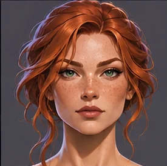
Étude d’inspiration : observer les volumes, les valeurs et la direction des reflets.
Voir la recette associée : Carnation hâlée dorée — naturel ↗
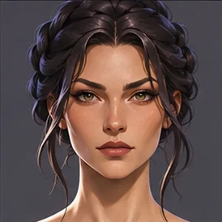
Étude d’inspiration : observer les volumes, les valeurs et la direction des reflets.
Voir la recette associée : Carnation hâlée dorée — naturel ↗
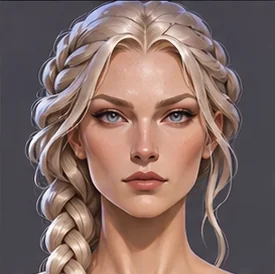
Étude d’inspiration : observer les volumes, les valeurs et la direction des reflets.
Voir la recette associée : Carnation hâlée dorée — naturel ↗
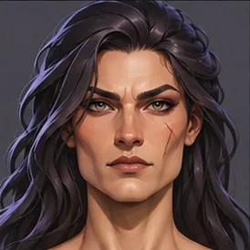
Étude d’inspiration : observer les volumes, les valeurs et la direction des reflets.
Voir la recette associée : Carnation hâlée dorée — naturel ↗
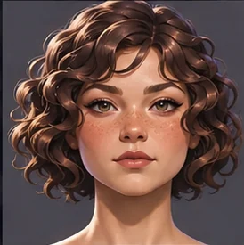
Étude d’inspiration : observer les volumes, les valeurs et la direction des reflets.
Voir la recette associée : Carnation hâlée dorée — naturel ↗
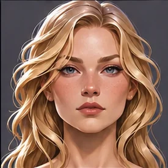
Étude d’inspiration : observer les volumes, les valeurs et la direction des reflets.
Voir la recette associée : Carnation hâlée dorée — naturel ↗
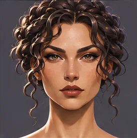
Étude d’inspiration : observer les volumes, les valeurs et la direction des reflets.
Voir la recette associée : Carnation hâlée dorée — naturel ↗
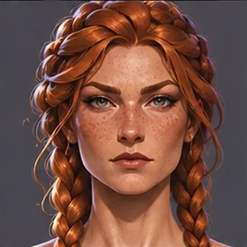
Étude d’inspiration : observer les volumes, les valeurs et la direction des reflets.
Voir la recette associée : Carnation hâlée dorée — naturel ↗
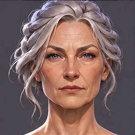
Étude d’inspiration : observer les volumes, les valeurs et la direction des reflets.
Voir la recette associée : Carnation hâlée dorée — naturel ↗
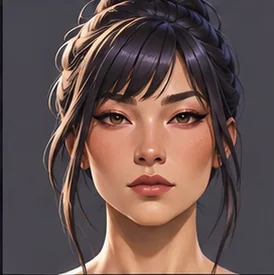
Étude d’inspiration : observer les volumes, les valeurs et la direction des reflets.
Voir la recette associée : Carnation hâlée dorée — naturel ↗
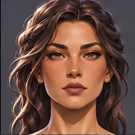
Étude d’inspiration : observer les volumes, les valeurs et la direction des reflets.
Voir la recette associée : Carnation hâlée dorée — naturel ↗
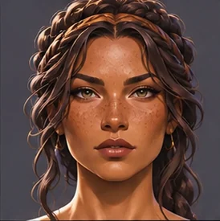
Étude d’inspiration : observer les volumes, les valeurs et la direction des reflets.
Voir la recette associée : Carnation hâlée dorée — naturel ↗
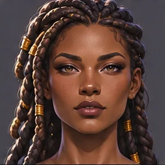
Étude d’inspiration : observer les volumes, les valeurs et la direction des reflets.
Voir la recette associée : Carnation hâlée dorée — naturel ↗
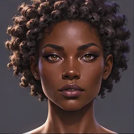
Étude d’inspiration : observer les volumes, les valeurs et la direction des reflets.
Voir la recette associée : Carnation hâlée dorée — naturel ↗
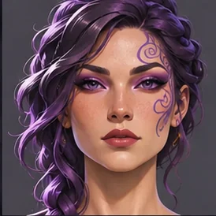
Étude d’inspiration : observer les volumes, les valeurs et la direction des reflets.
Voir la recette associée : Carnation hâlée dorée — naturel ↗
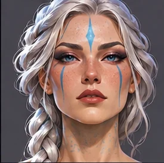
Étude d’inspiration : observer les volumes, les valeurs et la direction des reflets.
Voir la recette associée : Carnation hâlée dorée — naturel ↗
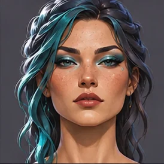
Étude d’inspiration : observer les volumes, les valeurs et la direction des reflets.
Voir la recette associée : Carnation hâlée dorée — naturel ↗
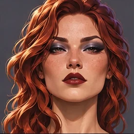
Étude d’inspiration : observer les volumes, les valeurs et la direction des reflets.
Voir la recette associée : Carnation hâlée dorée — naturel ↗
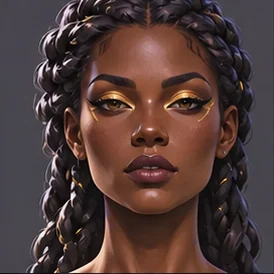
Étude d’inspiration : observer les volumes, les valeurs et la direction des reflets.
Voir la recette associée : Carnation hâlée dorée — naturel ↗
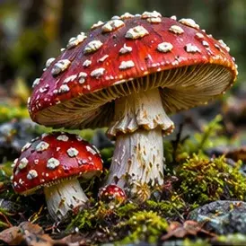
Étude d’inspiration : observer les volumes, les valeurs et la direction des reflets.
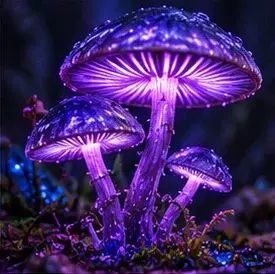
Étude d’inspiration : observer les volumes, les valeurs et la direction des reflets.
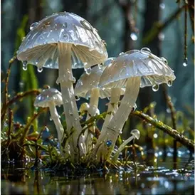
Étude d’inspiration : observer les volumes, les valeurs et la direction des reflets.
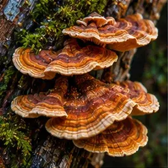
Étude d’inspiration : observer les volumes, les valeurs et la direction des reflets.
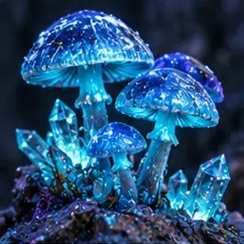
Étude d’inspiration : observer les volumes, les valeurs et la direction des reflets.
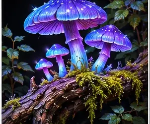
Étude d’inspiration : observer les volumes, les valeurs et la direction des reflets.
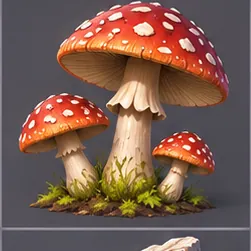
Étude d’inspiration : observer les volumes, les valeurs et la direction des reflets.
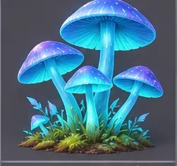
Étude d’inspiration : observer les volumes, les valeurs et la direction des reflets.
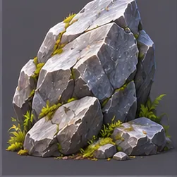
Étude d’inspiration : observer les volumes, les valeurs et la direction des reflets.
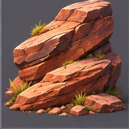
Étude d’inspiration : observer les volumes, les valeurs et la direction des reflets.
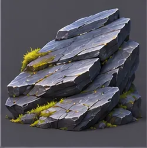
Étude d’inspiration : observer les volumes, les valeurs et la direction des reflets.
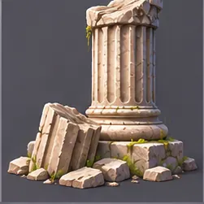
Étude d’inspiration : observer les volumes, les valeurs et la direction des reflets.
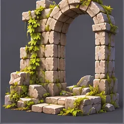
Étude d’inspiration : observer les volumes, les valeurs et la direction des reflets.
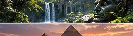
Étude d’inspiration : observer les volumes, les valeurs et la direction des reflets.
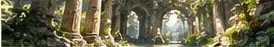
Étude d’inspiration : observer les volumes, les valeurs et la direction des reflets.
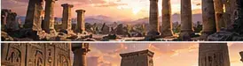
Étude d’inspiration : observer les volumes, les valeurs et la direction des reflets.
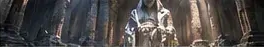
Étude d’inspiration : observer les volumes, les valeurs et la direction des reflets.
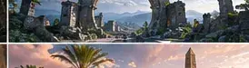
Étude d’inspiration : observer les volumes, les valeurs et la direction des reflets.
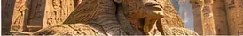
Étude d’inspiration : observer les volumes, les valeurs et la direction des reflets.
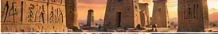
Étude d’inspiration : observer les volumes, les valeurs et la direction des reflets.
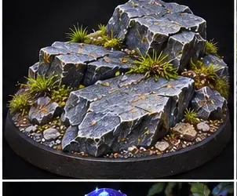
Étude d’inspiration : observer les volumes, les valeurs et la direction des reflets.
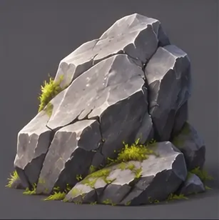
Étude d’inspiration : observer les volumes, les valeurs et la direction des reflets.
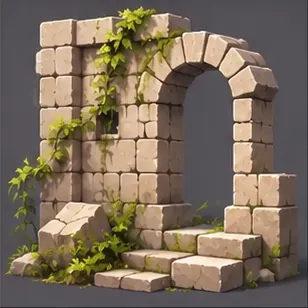
Étude d’inspiration : observer les volumes, les valeurs et la direction des reflets.
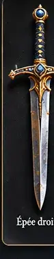
Étude d’inspiration : observer les volumes, les valeurs et la direction des reflets.
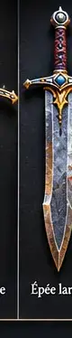
Étude d’inspiration : observer les volumes, les valeurs et la direction des reflets.
Étude d’inspiration : observer les volumes, les valeurs et la direction des reflets.
Étude d’inspiration : observer les volumes, les valeurs et la direction des reflets.
Étude d’inspiration : observer les volumes, les valeurs et la direction des reflets.
Étude d’inspiration : observer les volumes, les valeurs et la direction des reflets.
Étude d’inspiration : observer les volumes, les valeurs et la direction des reflets.
Étude d’inspiration : observer les volumes, les valeurs et la direction des reflets.
Étude d’inspiration : observer les volumes, les valeurs et la direction des reflets.
Étude d’inspiration : observer les volumes, les valeurs et la direction des reflets.
Étude d’inspiration : observer les volumes, les valeurs et la direction des reflets.
Étude d’inspiration : observer les volumes, les valeurs et la direction des reflets.
Étude d’inspiration : observer les volumes, les valeurs et la direction des reflets.
Étude d’inspiration : observer les volumes, les valeurs et la direction des reflets.
Étude d’inspiration : observer les volumes, les valeurs et la direction des reflets.
Étude d’inspiration : observer les volumes, les valeurs et la direction des reflets.
Étude d’inspiration : observer les volumes, les valeurs et la direction des reflets.
Étude d’inspiration : observer les volumes, les valeurs et la direction des reflets.
Étude d’inspiration : observer les volumes, les valeurs et la direction des reflets.
Étude d’inspiration : observer les volumes, les valeurs et la direction des reflets.
Étude d’inspiration : observer les volumes, les valeurs et la direction des reflets.
Étude d’inspiration : observer les volumes, les valeurs et la direction des reflets.
Étude d’inspiration : observer les volumes, les valeurs et la direction des reflets.
Étude d’inspiration : observer les volumes, les valeurs et la direction des reflets.
Étude d’inspiration : observer les volumes, les valeurs et la direction des reflets.
Étude d’inspiration : observer les volumes, les valeurs et la direction des reflets.
Étude d’inspiration : observer les volumes, les valeurs et la direction des reflets.
Étude d’inspiration : observer les volumes, les valeurs et la direction des reflets.
Étude d’inspiration : observer les volumes, les valeurs et la direction des reflets.
Étude d’inspiration : observer les volumes, les valeurs et la direction des reflets.
Étude d’inspiration : observer les volumes, les valeurs et la direction des reflets.
Étude d’inspiration : observer les volumes, les valeurs et la direction des reflets.
Étude d’inspiration : observer les volumes, les valeurs et la direction des reflets.
Étude d’inspiration : observer les volumes, les valeurs et la direction des reflets.
Étude d’inspiration : observer les volumes, les valeurs et la direction des reflets.
Étude d’inspiration : observer les volumes, les valeurs et la direction des reflets.
Étude d’inspiration : observer les volumes, les valeurs et la direction des reflets.
Étude d’inspiration : observer les volumes, les valeurs et la direction des reflets.
Étude d’inspiration : observer les volumes, les valeurs et la direction des reflets.
Étude d’inspiration : observer les volumes, les valeurs et la direction des reflets.
Étude d’inspiration : observer les volumes, les valeurs et la direction des reflets.
Étude d’inspiration : observer les volumes, les valeurs et la direction des reflets.
Étude d’inspiration : observer les volumes, les valeurs et la direction des reflets.
Étude d’inspiration : observer les volumes, les valeurs et la direction des reflets.
Étude d’inspiration : observer les volumes, les valeurs et la direction des reflets.
Étude d’inspiration : observer les volumes, les valeurs et la direction des reflets.
Étude d’inspiration : observer les volumes, les valeurs et la direction des reflets.
Étude d’inspiration : observer les volumes, les valeurs et la direction des reflets.
Étude d’inspiration : observer les volumes, les valeurs et la direction des reflets.
Étude d’inspiration : observer les volumes, les valeurs et la direction des reflets.
Étude d’inspiration : observer les volumes, les valeurs et la direction des reflets.
Étude d’inspiration : observer les volumes, les valeurs et la direction des reflets.
Étude d’inspiration : observer les volumes, les valeurs et la direction des reflets.
Étude d’inspiration : observer les volumes, les valeurs et la direction des reflets.
Étude d’inspiration : observer les volumes, les valeurs et la direction des reflets.
Étude d’inspiration : observer les volumes, les valeurs et la direction des reflets.
Étude d’inspiration : observer les volumes, les valeurs et la direction des reflets.
Voir la recette associée : Carnation foncée — sous-ton chaud ↗
Étude d’inspiration : observer les volumes, les valeurs et la direction des reflets.
Étude d’inspiration : observer les volumes, les valeurs et la direction des reflets.
Étude d’inspiration : observer les volumes, les valeurs et la direction des reflets.
Étude d’inspiration : observer les volumes, les valeurs et la direction des reflets.
Étude d’inspiration : observer les volumes, les valeurs et la direction des reflets.
Étude d’inspiration : observer les volumes, les valeurs et la direction des reflets.
Étude d’inspiration : observer les volumes, les valeurs et la direction des reflets.
Étude d’inspiration : observer les volumes, les valeurs et la direction des reflets.
Étude d’inspiration : observer les volumes, les valeurs et la direction des reflets.
Étude d’inspiration : observer les volumes, les valeurs et la direction des reflets.
Étude d’inspiration : observer les volumes, les valeurs et la direction des reflets.
Étude d’inspiration : observer les volumes, les valeurs et la direction des reflets.
Étude d’inspiration : observer les volumes, les valeurs et la direction des reflets.
Étude d’inspiration : observer les volumes, les valeurs et la direction des reflets.
Étude d’inspiration : observer les volumes, les valeurs et la direction des reflets.
Étude d’inspiration : observer les volumes, les valeurs et la direction des reflets.
Étude d’inspiration : observer les volumes, les valeurs et la direction des reflets.
Étude d’inspiration : observer les volumes, les valeurs et la direction des reflets.
Étude d’inspiration : observer les volumes, les valeurs et la direction des reflets.
Étude d’inspiration : observer les volumes, les valeurs et la direction des reflets.
Étude d’inspiration : observer les volumes, les valeurs et la direction des reflets.
Étude d’inspiration : observer les volumes, les valeurs et la direction des reflets.
Étude d’inspiration : observer les volumes, les valeurs et la direction des reflets.
Étude d’inspiration : observer les volumes, les valeurs et la direction des reflets.
Étude d’inspiration : observer les volumes, les valeurs et la direction des reflets.
Étude d’inspiration : observer les volumes, les valeurs et la direction des reflets.
Étude d’inspiration : observer les volumes, les valeurs et la direction des reflets.
Voir la recette associée : Voile ivoire uni sur peau hâlée ↗
Étude d’inspiration : observer les volumes, les valeurs et la direction des reflets.
Voir la recette associée : Carnation foncée — sous-ton chaud ↗
Étude d’inspiration : observer les volumes, les valeurs et la direction des reflets.
Voir la recette associée : Carnation foncée — sous-ton chaud ↗
Étude d’inspiration : observer les volumes, les valeurs et la direction des reflets.
Voir la recette associée : Carnation foncée — sous-ton chaud ↗
Étude d’inspiration : observer les volumes, les valeurs et la direction des reflets.
Voir la recette associée : Voile ivoire uni sur peau hâlée ↗
Étude d’inspiration : observer les volumes, les valeurs et la direction des reflets.
Étude d’inspiration : observer les volumes, les valeurs et la direction des reflets.
Voir la recette associée : Voile ivoire uni sur peau hâlée ↗
Étude d’inspiration : observer les volumes, les valeurs et la direction des reflets.
Étude d’inspiration : observer les volumes, les valeurs et la direction des reflets.
Voir la recette associée : Voile ivoire uni sur peau hâlée ↗
Bibliothèque pédagogique : visages, 20 chevelures, armes, végétation et pierres. Chaque étude mène à une recherche de recettes ; les archives sont rangées à part.
Joues et front bombés : lumière sur front, pommettes et menton ; ombre sous les joues.
Lumière en haut des pommettes et arête du nez ; ombres latérales adoucies.
Contraste sur les tempes et sous la mâchoire ; points clairs sur le nez et les pommettes.
Souligner les plans du visage, conserver les transitions chaudes sur les joues.
Reflets chauds sur les pommettes, front et nez ; ombres colorées plutôt que noires.
Grandes bandes de lumière parallèles aux mèches, ombre entre les masses.
Reflets fins et froids sur les courbes ; ombres profondes aux racines.
Éclaircir les crêtes de chaque vague ; garder les creux brun-roux.
Chaque segment tressé reçoit un reflet sur sa partie bombée.
Ombres indigo, reflets cyan sur les ondulations, accent violet dans les transitions.
Alternance de plans clairs et sombres sur la lame, arête presque blanche.
Reflet principal incurvé suivant le tranchant, dos plus sombre.
Séparer les deux faces des lames, renforcer les arêtes et l’ombre près de l’emmanchement.
Un éclat sur chaque pointe orientée vers la lumière ; creux très sombres.
Plans supérieurs lumineux, flancs contrastés, angles marqués.
Nervures claires et bords exposés, ombres sous les folioles.
Tiges jaunes sur ombres ocre, pointes éclaircies de manière irrégulière.
Feuilles en petits volumes, ombres de contact sous les feuilles.
Dôme lumineux, dessous des chapeaux ombré, petites touches ivoire.
Cœur cyan clair, dégradé bleu, faible OSL sur le sol proche.
Faces hautes claires, fissures foncées, arêtes cassées soulignées.
Plans orange et ocre ; fissures brun-violet, poussière claire.
Strates horizontales, fines arêtes gris-bleu, ombres entre les plaques.
Éclaircir les moulures, ombrer les cannelures et les cassures.
Lumière sur les blocs supérieurs, ombre dans les joints, mousses aux contacts.
Reflet large au sommet et sur le bombé de la frange
Bande de lumière verticale discontinue ; creux froids
Rehauts courts suivant les mèches et la couronne
Lumières segmentées sur les crêtes des boucles
Éclaircir les boucles externes, garder les interstices sombres
Éclats sur chaque vague, ombre dans les vallées
Accentuer les arêtes de chaque brin croisé
Alternance clair/sombre sur les croisements des tresses
Lumière au sommet de la queue et près de l’attache
Petites bandes courbes sur le chignon, creux gris froids
Ombres gris bleuté, pointes ivoire sur les volumes
Lumière cyan pâle sur les crêtes, ombres bleu pétrole
Éclaircir les mèches courtes, ombres violettes profondes
Rehauts sur chaque mèche, anneaux dorés distincts
Lumières roses froides et creux mauve grisé
Les images montrent des exemples stylisés, pas des photographies de pots AK. Les raccourcis ouvrent les recettes existantes par mot-clé : une recherche peut afficher plusieurs variantes.
16 nouvelles études semi-cartoon, avec une seule idée par image et une indication concrète du placement des lumières. Les images sont découpées individuellement et compressées pour la consultation hors ligne.
Champignons, visages de face, 10 chevelures, 12 armes et études de lumière. Chaque image est séparée et reliée à la recherche de recettes ; les anciennes collections et chaussures restent conservées.
Lumière rasante et reflets localisés. Étude de placement, sans bijoux ni décor.
Lumière latérale chaude. Étude de placement, sans bijoux ni décor.
Lumière chaude et ombres neutres. Étude de placement, sans bijoux ni décor.
Lumière frontale et ombres sous les pommettes. Étude de placement, sans bijoux ni décor.
Lumière douce de trois-quarts. Étude de placement, sans bijoux ni décor.
Champignons · Étude visuelle
Champignons · Étude visuelle
Champignons · Étude visuelle
Champignons · Étude visuelle
Champignons · Étude visuelle
Visages féminins de face · Étude visuelle
Visages féminins de face · Étude visuelle
Visages féminins de face · Étude visuelle
Visages féminins de face · Étude visuelle
Visages féminins de face · Étude visuelle
Chevelures · Étude visuelle
Chevelures · Étude visuelle
Chevelures · Étude visuelle
Chevelures · Étude visuelle
Chevelures · Étude visuelle
Chevelures · Étude visuelle
Chevelures · Étude visuelle
Chevelures · Étude visuelle
Chevelures · Étude visuelle
Chevelures · Étude visuelle
Épées et armes · Étude visuelle
Épées et armes · Étude visuelle
Épées et armes · Étude visuelle
Épées et armes · Étude visuelle
Épées et armes · Étude visuelle
Épées et armes · Étude visuelle
Épées et armes · Étude visuelle
Épées et armes · Étude visuelle
Épées et armes · Étude visuelle
Épées et armes · Étude visuelle
Épées et armes · Étude visuelle
Épées et armes · Étude visuelle
Études de lumière · Étude visuelle
Études de lumière · Étude visuelle
Études de lumière · Étude visuelle

Études de lumière · Étude visuelle

Études de lumière · Étude visuelle
Études de lumière · Étude visuelle
Études de lumière · Étude visuelle
Études de lumière · Étude visuelle
Visages féminins · Peaux & vivant · Étude 1/5
Visages féminins · Peaux & vivant · Étude 2/5
Visages féminins · Peaux & vivant · Étude 3/5
Visages féminins · Peaux & vivant · Étude 4/5
Visages féminins · Peaux & vivant · Étude 5/5
Chevaliers · Armes & équipement · Étude 1/5
Chevaliers · Armes & équipement · Étude 2/5
Chevaliers · Armes & équipement · Étude 3/5
Chevaliers · Armes & équipement · Étude 4/5
Chevaliers · Armes & équipement · Étude 5/5
Orks et gobelins · Peaux & vivant · Étude 1/5
Orks et gobelins · Peaux & vivant · Étude 2/5
Orks et gobelins · Peaux & vivant · Étude 3/5
Orks et gobelins · Peaux & vivant · Étude 4/5
Orks et gobelins · Peaux & vivant · Étude 5/5
Mars et Lune · Décors & environnements · Étude 1/5
Mars et Lune · Décors & environnements · Étude 2/5
Mars et Lune · Décors & environnements · Étude 3/5
Mars et Lune · Décors & environnements · Étude 4/5
Mars et Lune · Décors & environnements · Étude 5/5
Ville post-apocalyptique · Décors & environnements · Étude 1/5
Ville post-apocalyptique · Décors & environnements · Étude 2/5
Ville post-apocalyptique · Décors & environnements · Étude 3/5
Ville post-apocalyptique · Décors & environnements · Étude 4/5
Ville post-apocalyptique · Décors & environnements · Étude 5/5
Ville médiévale-fantastique · Décors & environnements · Étude 1/5
Ville médiévale-fantastique · Décors & environnements · Étude 2/5
Ville médiévale-fantastique · Décors & environnements · Étude 3/5
Ville médiévale-fantastique · Décors & environnements · Étude 4/5
Ville médiévale-fantastique · Décors & environnements · Étude 5/5
Marécages sombres et clairs · Décors & environnements · Étude 1/5
Marécages sombres et clairs · Décors & environnements · Étude 2/5
Marécages sombres et clairs · Décors & environnements · Étude 3/5
Marécages sombres et clairs · Décors & environnements · Étude 4/5
Marécages sombres et clairs · Décors & environnements · Étude 5/5
Forêts médiévales-fantastiques · Décors & environnements · Étude 1/5
Forêts médiévales-fantastiques · Décors & environnements · Étude 2/5
Forêts médiévales-fantastiques · Décors & environnements · Étude 3/5
Forêts médiévales-fantastiques · Décors & environnements · Étude 4/5
Forêts médiévales-fantastiques · Décors & environnements · Étude 5/5
Corps féminins — études de peinture · Peaux & vivant · Étude 1/5
Corps féminins — études de peinture · Peaux & vivant · Étude 2/5
Corps féminins — études de peinture · Peaux & vivant · Étude 3/5
Corps féminins — études de peinture · Peaux & vivant · Étude 4/5
Corps féminins — études de peinture · Peaux & vivant · Étude 5/5
Temples anciens et ruines · Décors & environnements · Étude 1/5
Temples anciens et ruines · Décors & environnements · Étude 2/5
Temples anciens et ruines · Décors & environnements · Étude 3/5
Temples anciens et ruines · Décors & environnements · Étude 4/5
Temples anciens et ruines · Décors & environnements · Étude 5/5
Égypte ancienne · Décors & environnements · Étude 1/5
Égypte ancienne · Décors & environnements · Étude 2/5
Égypte ancienne · Décors & environnements · Étude 3/5
Égypte ancienne · Décors & environnements · Étude 4/5
Égypte ancienne · Décors & environnements · Étude 5/5
Animaux sauvages · Peaux & vivant · Étude 1/5
Animaux sauvages · Peaux & vivant · Étude 2/5
Animaux sauvages · Peaux & vivant · Étude 3/5
Animaux sauvages · Peaux & vivant · Étude 4/5
Animaux sauvages · Peaux & vivant · Étude 5/5
Oiseaux et ailes sauvages · Peaux & vivant · Étude 1/5
Oiseaux et ailes sauvages · Peaux & vivant · Étude 2/5
Oiseaux et ailes sauvages · Peaux & vivant · Étude 3/5
Oiseaux et ailes sauvages · Peaux & vivant · Étude 4/5
Oiseaux et ailes sauvages · Peaux & vivant · Étude 5/5
Étude visuelle indépendante · Peaux & vivant
Étude visuelle indépendante · Textures & finitions
Étude visuelle indépendante · Peaux & vivant
Étude visuelle indépendante · Peaux & vivant
Étude visuelle indépendante · Armes & équipement
Étude visuelle indépendante · Armes & équipement
Étude visuelle indépendante · Armes & équipement
Étude visuelle indépendante · Armes & équipement
Étude visuelle indépendante · Armes & équipement
Étude visuelle indépendante · Armes & équipement
Étude visuelle indépendante · Décors & environnements
Étude visuelle indépendante · Décors & environnements
Étude visuelle indépendante · Décors & environnements
Étude visuelle indépendante · Décors & environnements
Étude visuelle indépendante · Décors & environnements
Étude visuelle indépendante · Décors & environnements
Étude visuelle indépendante · Lumières & effets
Étude visuelle indépendante · Décors & environnements
Étude visuelle indépendante · Gemmes & cristaux
Étude visuelle indépendante · Textures & finitions
Ailes blanches, noires et irisées, plumage, oiseaux et directions de lumière
Vues face, trois-quarts et profil ; NMM et TMP
Lames courbes, reflets, gravures et angles
Sphères, pointes et faces métalliques
Faces planes, coins et arêtes lumineuses
Crochets, pointes, tranchants et hampes
Crânes, squelettes, os vieillis, cornes
Bave, mucus, transparence, viscosité
Loups, renards, serpents, crapauds, souris, araignées
Métal neuf, rouille, salissures, chipping
Feuilles, fougères, mousse, fleurs
Carnations, rides, lèvres, dents, expressions
Iris, pupille, lentilles, regards
Turquoise, profond, cascades, marais
Champignons, lueurs, OSL, bois enchanté
Trolls, gobelins, elfes, peaux variées
Écailles, iridescence, cornes, cuir reptilien
Acier, runes, bois, NMM et TMP
Bolters, plasma, armes énergétiques, usure
Voiles, soie, transparence, peau visible
Conseil : utilise ces images pour choisir une ambiance, puis vérifie les références et les proportions de peinture dans les fiches. Les illustrations sont des inspirations artistiques, pas des nuanciers certifiés.
Fiches pour figurines fantasy, contemporaines et science-fiction : silhouettes, matériaux, reflets, usure et décorations. Les progressions en six valeurs décrivent des teintes à placer selon les volumes, pas nécessairement six couches successives.
Illustration artistique : les numéros AK imprimés dans l’image peuvent être inexacts. Utiliser les noms des fiches comme point de départ et vérifier les références avant achat.
Recettes expérimentales non testées individuellement. Les noms de couleurs AK servent de repères ; les mélanges et la finition sont à adapter à l’échelle de la figurine.
Utilise la barre en haut pour afficher uniquement la famille qui t’intéresse. Les recettes historiques, illustrations, laboratoire et nouvelles fiches sont conservés.
Choisis une grande famille dans le sélecteur, puis une rubrique. La recherche explore les fiches de la rubrique sélectionnée ; active « Toutes les rubriques » pour une recherche globale. Les anciennes extensions et planches sont conservées dans la bibliothèque visuelle ci-dessous.
1. Choisis une famille (matières, carnations, NMM/TMP, décors, Space Marines, etc.). 2. Choisis la sous-catégorie. 3. Recherche un mot ou une référence. 4. Déplie la fiche, puis copie sa recette. Pour trouver une couleur dans tout l'atlas, sélectionne « Toutes les rubriques ».
Planche originale intégrée directement au fichier (consultable hors connexion). Clique sur l'image pour l'agrandir ; les schémas sont des guides visuels, pas des mesures physiques de réflectance.
Socles : triangle de composition, point focal, asymétrie et contraste de taille. Éclairage : même direction principale, mais réponse différente du tissu, du cuir, du métal, du bois et de la roche. Gemmes : ombre en haut, croissant lumineux en bas et reflet blanc ponctuel pour une gemme stylisée. Optiques : centre saturé, éclat de bord et halo limité à l'environnement proche.
32 ambiances et 41 chapitres Space Marines, plus 18 tutoriels. Les fiches détaillées se trouvent dans les onglets Paysages & planètes et Space Marines ci-dessous. Toutes les anciennes recettes et les planches illustrées sont conservées.
Citadel rapide : base → ombre (Shade dans les creux) → lumière (Layer). AK rapide : sélectionner trois teintes de la progression AK proposée. Avancé : utiliser les six références AK et la recette Citadel étendue, puis ajouter les variantes d’éclairage, marquages, NMM ou TMP. Les correspondances AK/Citadel sont approximatives, pas des équivalences officielles.
Peindre d’abord la couleur du terrain, puis l’ambiance : désert ocre, planète volcanique, forêt tropicale, marécage, monde de glace, cité pluvieuse, etc. Les six références sont des jalons chromatiques, pas six couches obligatoires. L’atmosphère doit affecter les objets voisins de manière cohérente.
Les couleurs emblématiques des chapitres sont inspirées de la documentation Warhammer. Les listes de peintures Citadel et les progressions AK sont des propositions d’atelier, sauf mention contraire, et non des recettes officielles. Les noms AK proviennent du catalogue de 181 références intégré à l’atlas ; certaines correspondances nécessitent encore vérification fabricant. Les schémas de successeurs et les marquages peuvent varier selon l’époque et l’unité.
Warhammer Community — chapitres et peinture · Guide Citadel Blood Angels (Horus Heresy)
Nouvelle collection de fiches : eaux abyssales, lagons turquoise, rivières, marais, glace, banquise, givre et neige. Les onglets correspondants sont disponibles plus bas dans la navigation.
Profondeur : plus l’eau est profonde ou trouble, moins le fond reste visible. Fond : sable clair, roche ou végétation changent l’apparence de l’eau peu profonde. Ciel : les reflets peuvent être bleus, gris, orange ou roses sans que l’eau elle-même change de couleur. Surface : écume, ondes et brillance sont des détails localisés.
Exemple lagon : AK11190 Dark Sea Blue → AK11142 Deep Green → AK11144 Emerald → AK11143 Mint Green → AK11134 Green Sky → AK11003 White Grey. La transition se répartit selon la profondeur, pas en bandes identiques sur chaque vague.
Peinture seule : illusion d’eau sur socles plats, flaques et arrière-plans. Gel acrylique transparent : relief de surface, ondulations et écume légère. Résine de coulée : volume réellement transparent avec profondeur; respecter impérativement épaisseur de coulée, ventilation et instructions du fabricant.
Neige : majoritairement mate, blanc cassé et ombres bleutées. Glace opaque : bleu gris, facettes et strates. Glace translucide : noyau plus sombre, fissures internes, bords très clairs et reflets ponctuels. Givre : dépôt léger sur les surfaces exposées, sans cacher entièrement le matériau dessous.
Recettes croisées, ambiances colorées, recette personnelle de peau verte et exploration de références moins exploitées. Ouvre les onglets « Chromatique », « Recettes personnelles » et « Explorer la palette AK » ci-dessous.
Couleur locale : ce qu’est l’objet (bleu, vert, rouge…). Éclairage : ce qui frappe ses plans (soleil orange, lune bleue…). Rebond : couleur renvoyée par le sable, l’eau, la végétation. Les couleurs d’ambiance s’ajoutent sur certaines faces, elles ne remplacent pas automatiquement les six valeurs du sujet.
Sur un objet bleu dans le désert : peindre d’abord le bleu, placer des ombres bleu pétrole, ajouter un rebond ocre-orange sur les faces dirigées vers le sol, puis rétablir des accents bleus sur les faces supérieures. Pour un dégradé orange → bleu, passer par une zone gris brun désaturée.
AK11146 Dark Green → AK11147 Olive Green → AK11137 Lime Green → AK11038 Pale Yellow. Quatre peintures, dans l’ordre donné. Les variantes sont proposées séparément.
Le catalogue interne recense 181 références; ce n’est pas un inventaire exhaustif de toute la gamme AK 3Gen. Les fiches « Explorer la palette AK » mettent en avant des références peu sollicitées. Les fréquences sont calculées dans le fichier source et ne mesurent pas les quantités de peinture utilisées.
Utilise les onglets de catégories ci-dessous pour retrouver les nouvelles fiches. Les triades utilisent O1 / Base / L2; les 6 valeurs suivent O2 / O1 / Base / L1 / L2 / L3. Les références AK proviennent du catalogue intégré à cet atlas, et les recettes sont des propositions non testées individuellement.
Travailler d’abord les grands volumes anatomiques; poser l’ombre chromatique dans les creux, puis les lumières sur front, pommettes, nez, épaules et articulations. Ajouter des glacis rouge brun, violet ou jaune olive pour casser le monochrome.
Exemple AK : séparation AK11098 Black Red + AK11102 Deep Brown; lèvres AK11063 Brown Rose + carnation locale; dents AK11030 Beige → AK11004 Ivory → AK11002 Offwhite.
Le TMP utilise de vraies peintures métalliques; le NMM simule le métal avec des pigments non métalliques. Les deux méthodes peuvent être combinées.
Ces deux illustrations sont intégrées au fichier et restent disponibles hors connexion. Clique sur une image pour l’agrandir.
Facettes, transparence et placement des lumières.
Placement des reflets sur les différents volumes.
Construis une progression chromatique expérimentale à six étapes. Le simulateur calcule des couleurs d’écran indicatives (pas un résultat physique de mélange de pigments). Les références AK sont des pistes de départ, à tester sur palette.
Méthode : 1. Fixe la couleur locale; 2. Ajoute une ombre colorée contrôlée; 3. Éclaire les plans orientés vers la source; 4. Ajoute la lumière réfléchie de l’environnement sur les plans qui lui font face; 5. Corrige la valeur et la saturation. Une ambiance ne transforme pas mécaniquement toute la figurine en dégradé.
Fiches pratiques par matière : gestes, palette de départ, finition et emplacement des effets. Chaque fiche se déplie sans JavaScript.
Révision approfondie : 39 textures disposent désormais de six couleurs AK choisies spécifiquement pour la matière, avec variantes Citadel et gestes de lumière.
20 études supplémentaires, six étapes ordonnées de l’ombre à la lumière. Les Citadel sont des alternatives artistiques, non des équivalences strictes. Les peintures Clear et Metallic demandent une application adaptée.
Reflets froids sur les plans orientés vers le ciel; garder les joints et la face inférieure presque noirs.
Pistes Citadel : Dark Reaper, Thunderhawk Blue, Fenrisian Grey, Ulthuan Grey
Glacis brun-rose dans les fissures; ivoire sur les arêtes érodées seulement.
Pistes Citadel : Dryad Bark, Rakarth Flesh, Pallid Wych Flesh
Concentrer une bande de lumière très étroite près d’une zone d’ombre sombre; ne pas éclaircir toute la surface uniformément.
Pistes Citadel : Rhinox Hide, Balor Brown, Yriel Yellow, Dorn Yellow, White Scar
Éclairer le cœur de la source et dégrader la lumière sur les surfaces qui lui font face.
Pistes Citadel : Abaddon Black, Averland Sunset, Flash Gitz Yellow, Dorn Yellow
Réserver le rose malade aux joues et articulations; conserver des ombres violacées transparentes.
Pistes Citadel : Screamer Pink, Kislev Flesh, Pallid Wych Flesh, Druchii Violet
Lumières étroites sur le sommet des plis; ombres mates et profondes.
Pistes Citadel : Khorne Red, Mephiston Red, Evil Sunz Scarlet, Pink Horror
Tapoter les valeurs claires sur le haut des coussinets; préserver les creux humides.
Pistes Citadel : Dryad Bark, Deathworld Forest, Elysian Green, Ogryn Camo
Dégradé humide sur le dos et les membres; points spéculaires très petits sur les zones luisantes.
Pistes Citadel : Caliban Green, Warpstone Glow, Moot Green, Pallid Wych Flesh
Alterner les plages sombres et claires sans lisser les contours du motif camouflage.
Pistes Citadel : Castellan Green, Deathworld Forest, Elysian Green, Ogryn Camo
Éclairer les bords supérieurs de chaque écaille; garder un filet sombre entre les plaques.
Pistes Citadel : Caliban Green, Warpstone Glow, Moot Green, White Scar
Inverser les gradients sur deux facettes voisines et poser un éclat blanc ponctuel.
Pistes Citadel : Kantor Blue, Caledor Sky, Lothern Blue, White Scar
Dégradés sur les volumes convexes, arêtes nettes sur les plaques.
Pistes Citadel : Kantor Blue, Macragge Blue, Calgar Blue, Fenrisian Grey
Glacis bleu-violet sur les barbes; traits clairs suivant le sens de la plume.
Pistes Citadel : Naggaroth Night, Xereus Purple, Genestealer Purple, Fenrisian Grey
Métallique bleu sur la partie médiane; poser le blanc en reflet spéculaire très localisé après séchage.
Pistes Citadel : Iron Warriors, Leadbelcher, Stormhost Silver, Talassar Blue
Préserver le métal sur les reliefs; les verts plus mats s’accumulent dans les creux.
Pistes Citadel : Warplock Bronze, Sycorax Bronze, Nihilakh Oxide, Stormhost Silver
Glacer en jaune transparent; ménager un reflet blanc vertical sur la paroi du flacon.
Pistes Citadel : Caliban Green, Moot Green, Tesseract Glow, White Scar
Peindre le cœur le plus clair et les extrémités les plus sombres; le Clear Yellow s’emploie en glacis.
Pistes Citadel : Mephiston Red, Troll Slayer Orange, Flash Gitz Yellow, White Scar
Reflets horizontaux discontinus; conserver une zone presque noire sous les berges.
Pistes Citadel : Dryad Bark, Castellan Green, Elysian Green, Pallid Wych Flesh
Bande de lumière froide et bord blanc net; quelques rayures courtes transversales.
Pistes Citadel : Abaddon Black, Dark Reaper, Thunderhawk Blue, Fenrisian Grey, White Scar
Brossage sec très léger sur les reliefs; glacis rose-brun pour lier les grains.
Pistes Citadel : Rhinox Hide, Skrag Brown, Karak Stone, Pallid Wych Flesh
Texture : Stippling très fin et hachures croisées; plis mats, transitions diffuses.
Palette de départ : Gris beige → ivoire; ombres bleu-gris ou brun-violet.
Finition : Mat
Placement : Éclaircir les sommets, laisser des irrégularités dans les creux.
Associe ces teintes aux pots AK de ton catalogue; la recette décrit le comportement visuel, pas une équivalence fabricant certifiée.
Progression ombre → lumière. Les six valeurs sont des étapes de peinture, non une obligation de recouvrir toute la surface avec six couches opaques.
Citadel — alternatives de palette : Stormvermin Fur, Rakarth Flesh, Ushabti Bone, Screaming Skull. Les quatre teintes Citadel ne sont pas des équivalents exacts des six étapes AK.
Geste et lumière : hachures mates, lumière diffuse sur la trame.
Contrôle : poser les ombres en premier; réserver la dernière valeur à moins de 10 % de la surface. Tester sur une chute de figurine et adapter la dilution.
Texture : Glacis sombres saturés; reflets étroits opposés aux plis, parfois lumineux dans les zones tournées vers le bas.
Palette de départ : Bordeaux → rouge cramoisi; ombres violet-noir.
Finition : Mat / reflet soyeux
Placement : Ne pas utiliser un éclaircissement uniforme des arêtes.
Associe ces teintes aux pots AK de ton catalogue; la recette décrit le comportement visuel, pas une équivalence fabricant certifiée.
Progression ombre → lumière. Les six valeurs sont des étapes de peinture, non une obligation de recouvrir toute la surface avec six couches opaques.
Citadel — alternatives de palette : Gal Vorbak Red, Screamer Pink, Pink Horror, Emperor’s Children. Les quatre teintes Citadel ne sont pas des équivalents exacts des six étapes AK.
Geste et lumière : reflets courts et doux, ombres profondes entre plis; ne pas border toutes les arêtes.
Contrôle : poser les ombres en premier; réserver la dernière valeur à moins de 10 % de la surface. Tester sur une chute de figurine et adapter la dilution.
Texture : Dégradés très lisses et reflets en bandes courtes, contrastés.
Palette de départ : Bleu nuit → bleu pâle; reflet ivoire.
Finition : Satin
Placement : Tracer les reflets perpendiculairement à la direction des plis.
Associe ces teintes aux pots AK de ton catalogue; la recette décrit le comportement visuel, pas une équivalence fabricant certifiée.
Progression ombre → lumière. Les six valeurs sont des étapes de peinture, non une obligation de recouvrir toute la surface avec six couches opaques.
Citadel — alternatives de palette : Kantor Blue, Altdorf Guard Blue, Calgar Blue, Fenrisian Grey. Les quatre teintes Citadel ne sont pas des équivalents exacts des six étapes AK.
Geste et lumière : rubans de lumière nets parallèles aux plis et contraste local élevé.
Contrôle : poser les ombres en premier; réserver la dernière valeur à moins de 10 % de la surface. Tester sur une chute de figurine et adapter la dilution.
Texture : Micro-hachures perpendiculaires, coutures et plis délavés.
Palette de départ : Indigo → bleu-gris → gris ivoire; ombre violet brun.
Finition : Mat
Placement : Éclaircir genoux, ourlets et coutures.
Associe ces teintes aux pots AK de ton catalogue; la recette décrit le comportement visuel, pas une équivalence fabricant certifiée.
Progression ombre → lumière. Les six valeurs sont des étapes de peinture, non une obligation de recouvrir toute la surface avec six couches opaques.
Citadel — alternatives de palette : The Fang, Russ Grey, Fenrisian Grey, Administratum Grey. Les quatre teintes Citadel ne sont pas des équivalents exacts des six étapes AK.
Geste et lumière : usure sur genoux, coutures et arrêtes, petites fibres croisées.
Contrôle : poser les ombres en premier; réserver la dernière valeur à moins de 10 % de la surface. Tester sur une chute de figurine et adapter la dilution.
Texture : Petits points et fibres courtes, reliefs adoucis.
Palette de départ : Brun gris → beige; ombre bleu noir.
Finition : Mat
Placement : Éviter les reflets blancs nets.
Associe ces teintes aux pots AK de ton catalogue; la recette décrit le comportement visuel, pas une équivalence fabricant certifiée.
Progression ombre → lumière. Les six valeurs sont des étapes de peinture, non une obligation de recouvrir toute la surface avec six couches opaques.
Citadel — alternatives de palette : Dryad Bark, Steel Legion Drab, Karak Stone, Ushabti Bone. Les quatre teintes Citadel ne sont pas des équivalents exacts des six étapes AK.
Geste et lumière : éclaircissements diffus et fibres irrégulières, éviter le glacis satiné.
Contrôle : poser les ombres en premier; réserver la dernière valeur à moins de 10 % de la surface. Tester sur une chute de figurine et adapter la dilution.
Texture : Foncer la couleur locale; reflets localisés, zones de transparence simulée.
Palette de départ : Vert foncé → vert moyen; reflets blanc froid.
Finition : Satin ponctuel
Placement : Faire suivre les zones sombres par la gravité.
Associe ces teintes aux pots AK de ton catalogue; la recette décrit le comportement visuel, pas une équivalence fabricant certifiée.
Progression ombre → lumière. Les six valeurs sont des étapes de peinture, non une obligation de recouvrir toute la surface avec six couches opaques.
Citadel — alternatives de palette : Abaddon Black, Kantor Blue, Altdorf Guard Blue, Fenrisian Grey. Les quatre teintes Citadel ne sont pas des équivalents exacts des six étapes AK.
Geste et lumière : contraste humide local sur les plis tendus; garder les creux assombris.
Contrôle : poser les ombres en premier; réserver la dernière valeur à moins de 10 % de la surface. Tester sur une chute de figurine et adapter la dilution.
Texture : Dégradés souples, reflets modérés sur courbes.
Palette de départ : Brun chocolat → cognac → beige; ombre violet.
Finition : Satin léger
Placement : Laisser de larges zones intermédiaires.
Associe ces teintes aux pots AK de ton catalogue; la recette décrit le comportement visuel, pas une équivalence fabricant certifiée.
Progression ombre → lumière. Les six valeurs sont des étapes de peinture, non une obligation de recouvrir toute la surface avec six couches opaques.
Citadel — alternatives de palette : Rhinox Hide, Doombull Brown, Skrag Brown, Deathclaw Brown. Les quatre teintes Citadel ne sont pas des équivalents exacts des six étapes AK.
Geste et lumière : lumière étroite sur arrêtes et points de tension, surface satinée.
Contrôle : poser les ombres en premier; réserver la dernière valeur à moins de 10 % de la surface. Tester sur une chute de figurine et adapter la dilution.
Texture : Microfissures claires irrégulières avec ombre décalée.
Palette de départ : Brun noir → cuir fauve → ivoire; ombre bleu pétrole.
Finition : Mat
Placement : Concentrer les craquelures sur les zones de tension.
Associe ces teintes aux pots AK de ton catalogue; la recette décrit le comportement visuel, pas une équivalence fabricant certifiée.
Progression ombre → lumière. Les six valeurs sont des étapes de peinture, non une obligation de recouvrir toute la surface avec six couches opaques.
Citadel — alternatives de palette : Rhinox Hide, Mournfang Brown, Steel Legion Drab, Karak Stone. Les quatre teintes Citadel ne sont pas des équivalents exacts des six étapes AK.
Geste et lumière : craquelures sombres ramifiées, quelques bords éclairés et écailles éparses.
Contrôle : poser les ombres en premier; réserver la dernière valeur à moins de 10 % de la surface. Tester sur une chute de figurine et adapter la dilution.
Texture : Glacis bruns transparents, quelques reflets vifs.
Palette de départ : Brun rouge → ambre; ombre bleu noir.
Finition : Satin
Placement : Brillance sur plis convexes et bords frottés.
Associe ces teintes aux pots AK de ton catalogue; la recette décrit le comportement visuel, pas une équivalence fabricant certifiée.
Progression ombre → lumière. Les six valeurs sont des étapes de peinture, non une obligation de recouvrir toute la surface avec six couches opaques.
Citadel — alternatives de palette : Rhinox Hide, Doombull Brown, Skrag Brown, Tau Light Ochre. Les quatre teintes Citadel ne sont pas des équivalents exacts des six étapes AK.
Geste et lumière : reflets lisses localisés sur plis comprimés; glacis brun transparent.
Contrôle : poser les ombres en premier; réserver la dernière valeur à moins de 10 % de la surface. Tester sur une chute de figurine et adapter la dilution.
Texture : Pigments ou stippling beige en partie basse.
Palette de départ : Brun terre → ocre; poussière sable clair.
Finition : Mat
Placement : Poussière directionnelle, pas uniforme.
Associe ces teintes aux pots AK de ton catalogue; la recette décrit le comportement visuel, pas une équivalence fabricant certifiée.
Progression ombre → lumière. Les six valeurs sont des étapes de peinture, non une obligation de recouvrir toute la surface avec six couches opaques.
Citadel — alternatives de palette : Rhinox Hide, Mournfang Brown, Baneblade Brown, Karak Stone. Les quatre teintes Citadel ne sont pas des équivalents exacts des six étapes AK.
Geste et lumière : poussière sur reliefs inférieurs, préserver la couleur du cuir dans les creux.
Contrôle : poser les ombres en premier; réserver la dernière valeur à moins de 10 % de la surface. Tester sur une chute de figurine et adapter la dilution.
Texture : Fibres fines parallèles imparfaites; nœuds et veinage.
Palette de départ : Brun miel → ocre → ivoire; ombre violet brun.
Finition : Mat
Placement : Suivre la longueur de la pièce.
Associe ces teintes aux pots AK de ton catalogue; la recette décrit le comportement visuel, pas une équivalence fabricant certifiée.
Progression ombre → lumière. Les six valeurs sont des étapes de peinture, non une obligation de recouvrir toute la surface avec six couches opaques.
Citadel — alternatives de palette : Dryad Bark, Mournfang Brown, XV-88, Ushabti Bone. Les quatre teintes Citadel ne sont pas des équivalents exacts des six étapes AK.
Geste et lumière : veinage longitudinal irrégulier et bouts de fibres plus clairs.
Contrôle : poser les ombres en premier; réserver la dernière valeur à moins de 10 % de la surface. Tester sur une chute de figurine et adapter la dilution.
Texture : Glacis vert-noir entre fibres; reflets courts.
Palette de départ : Brun gris → vert olive; reflets gris froid.
Finition : Satin local
Placement : Laisser les creux plus sombres et humides.
Associe ces teintes aux pots AK de ton catalogue; la recette décrit le comportement visuel, pas une équivalence fabricant certifiée.
Progression ombre → lumière. Les six valeurs sont des étapes de peinture, non une obligation de recouvrir toute la surface avec six couches opaques.
Citadel — alternatives de palette : Dryad Bark, Deathworld Forest, Stormvermin Fur, Rakarth Flesh. Les quatre teintes Citadel ne sont pas des équivalents exacts des six étapes AK.
Geste et lumière : ombres verdâtres dans les joints, quelques reflets mouillés ponctuels.
Contrôle : poser les ombres en premier; réserver la dernière valeur à moins de 10 % de la surface. Tester sur une chute de figurine et adapter la dilution.
Texture : Charbon mat, cendres grises et bords orangés très rares.
Palette de départ : Noir brun → gris cendre; touches brun rouge.
Finition : Mat
Placement : Réserver le brillant aux braises actives.
Associe ces teintes aux pots AK de ton catalogue; la recette décrit le comportement visuel, pas une équivalence fabricant certifiée.
Progression ombre → lumière. Les six valeurs sont des étapes de peinture, non une obligation de recouvrir toute la surface avec six couches opaques.
Citadel — alternatives de palette : Abaddon Black, Corvus Black, Eshin Grey, Dawnstone. Les quatre teintes Citadel ne sont pas des équivalents exacts des six étapes AK.
Geste et lumière : charbon mat majoritaire, cendre claire seulement sur quelques fractures.
Contrôle : poser les ombres en premier; réserver la dernière valeur à moins de 10 % de la surface. Tester sur une chute de figurine et adapter la dilution.
Texture : Stippling de points clairs et sombres à tailles variées.
Palette de départ : Gris ardoise → gris clair; touches beige et noir.
Finition : Mat
Placement : Ne pas éclaircir chaque grain identiquement.
Associe ces teintes aux pots AK de ton catalogue; la recette décrit le comportement visuel, pas une équivalence fabricant certifiée.
Progression ombre → lumière. Les six valeurs sont des étapes de peinture, non une obligation de recouvrir toute la surface avec six couches opaques.
Citadel — alternatives de palette : Abaddon Black, Eshin Grey, Dawnstone, Administratum Grey. Les quatre teintes Citadel ne sont pas des équivalents exacts des six étapes AK.
Geste et lumière : points mouchetés de valeurs variées, plans brisés sans dégradé lisse.
Contrôle : poser les ombres en premier; réserver la dernière valeur à moins de 10 % de la surface. Tester sur une chute de figurine et adapter la dilution.
Texture : Strates fines, arêtes cassées et ombres froides.
Palette de départ : Bleu noir → gris bleuté → ivoire froid.
Finition : Mat
Placement : Suivre les plans de fracture.
Associe ces teintes aux pots AK de ton catalogue; la recette décrit le comportement visuel, pas une équivalence fabricant certifiée.
Progression ombre → lumière. Les six valeurs sont des étapes de peinture, non une obligation de recouvrir toute la surface avec six couches opaques.
Citadel — alternatives de palette : The Fang, Russ Grey, Fenrisian Grey, Blue Horror. Les quatre teintes Citadel ne sont pas des équivalents exacts des six étapes AK.
Geste et lumière : arêtes feuilletées et faces larges froides, éviter un éclaircissement uniforme.
Contrôle : poser les ombres en premier; réserver la dernière valeur à moins de 10 % de la surface. Tester sur une chute de figurine et adapter la dilution.
Texture : Veines irrégulières sous glacis translucides.
Palette de départ : Gris violet → ivoire; veines gris brun.
Finition : Satin
Placement : Veines qui bifurquent et disparaissent.
Associe ces teintes aux pots AK de ton catalogue; la recette décrit le comportement visuel, pas une équivalence fabricant certifiée.
Progression ombre → lumière. Les six valeurs sont des étapes de peinture, non une obligation de recouvrir toute la surface avec six couches opaques.
Citadel — alternatives de palette : Stormvermin Fur, Rakarth Flesh, Pallid Wych Flesh, White Scar. Les quatre teintes Citadel ne sont pas des équivalents exacts des six étapes AK.
Geste et lumière : veines fines en ramifications sous glacis translucides, poli discret.
Contrôle : poser les ombres en premier; réserver la dernière valeur à moins de 10 % de la surface. Tester sur une chute de figurine et adapter la dilution.
Texture : Glacis sombres vers le bas et reflets ponctuels.
Palette de départ : Gris bleu → vert noir; arêtes gris clair.
Finition : Satin ponctuel
Placement : Humidité dans creux et faces abritées.
Associe ces teintes aux pots AK de ton catalogue; la recette décrit le comportement visuel, pas une équivalence fabricant certifiée.
Progression ombre → lumière. Les six valeurs sont des étapes de peinture, non une obligation de recouvrir toute la surface avec six couches opaques.
Citadel — alternatives de palette : Abaddon Black, Eshin Grey, Dawnstone, Nurgling Green. Les quatre teintes Citadel ne sont pas des équivalents exacts des six étapes AK.
Geste et lumière : faces sombres et froides, reflet spéculaire seulement sur surfaces orientées.
Contrôle : poser les ombres en premier; réserver la dernière valeur à moins de 10 % de la surface. Tester sur une chute de figurine et adapter la dilution.
Texture : Hachures directionnelles et glacis froid sur métal réel.
Palette de départ : Acier sombre → argent; filtre bleu très transparent.
Finition : Métallique
Placement : Orienter toutes les micro-rayures dans le même sens.
Associe ces teintes aux pots AK de ton catalogue; la recette décrit le comportement visuel, pas une équivalence fabricant certifiée.
Progression ombre → lumière. Les six valeurs sont des étapes de peinture, non une obligation de recouvrir toute la surface avec six couches opaques.
Citadel — alternatives de palette : Warplock Bronze, Leadbelcher, Ironbreaker, Stormhost Silver. Les quatre teintes Citadel ne sont pas des équivalents exacts des six étapes AK.
Geste et lumière : couches métalliques très fines, stries dans le sens du brossage.
Contrôle : poser les ombres en premier; réserver la dernière valeur à moins de 10 % de la surface. Tester sur une chute de figurine et adapter la dilution.
Texture : Stippling brun rouille, orange sur reliefs de corrosion.
Palette de départ : Brun noir → brun rouge → orange; acier en éclats.
Finition : Mat + métal
Placement : Laisser du métal exposé près des frottements.
Associe ces teintes aux pots AK de ton catalogue; la recette décrit le comportement visuel, pas une équivalence fabricant certifiée.
Progression ombre → lumière. Les six valeurs sont des étapes de peinture, non une obligation de recouvrir toute la surface avec six couches opaques.
Citadel — alternatives de palette : Rhinox Hide, Typhus Corrosion, Ryza Rust, Skrag Brown. Les quatre teintes Citadel ne sont pas des équivalents exacts des six étapes AK.
Geste et lumière : rouille concentrée dans creux et éclats, garder quelques arêtes métalliques.
Contrôle : poser les ombres en premier; réserver la dernière valeur à moins de 10 % de la surface. Tester sur une chute de figurine et adapter la dilution.
Texture : Glacis vert-de-gris dans creux; reflets cuivrés préservés.
Palette de départ : Cuivre → turquoise désaturé; ombre brun noir.
Finition : Métallique / mat
Placement : Patine discontinue, creux et zones protégées.
Associe ces teintes aux pots AK de ton catalogue; la recette décrit le comportement visuel, pas une équivalence fabricant certifiée.
Progression ombre → lumière. Les six valeurs sont des étapes de peinture, non une obligation de recouvrir toute la surface avec six couches opaques.
Citadel — alternatives de palette : Warplock Bronze, Hashut Copper, Nihilakh Oxide, Sybarite Green. Les quatre teintes Citadel ne sont pas des équivalents exacts des six étapes AK.
Geste et lumière : vert-de-gris dans les creux, conserver des touches de cuivre aux points de frottement.
Contrôle : poser les ombres en premier; réserver la dernière valeur à moins de 10 % de la surface. Tester sur une chute de figurine et adapter la dilution.
Texture : Bandes claires et sombres adjacentes, reflets blancs étroits.
Palette de départ : Bleu noir → gris acier → blanc.
Finition : Illusion brillante
Placement : Reflets structurés par la géométrie.
Associe ces teintes aux pots AK de ton catalogue; la recette décrit le comportement visuel, pas une équivalence fabricant certifiée.
Progression ombre → lumière. Les six valeurs sont des étapes de peinture, non une obligation de recouvrir toute la surface avec six couches opaques.
Citadel — alternatives de palette : Abaddon Black, Eshin Grey, Dawnstone, White Scar. Les quatre teintes Citadel ne sont pas des équivalents exacts des six étapes AK.
Geste et lumière : bandes de contraste très abruptes et points blancs orientés vers la source.
Contrôle : poser les ombres en premier; réserver la dernière valeur à moins de 10 % de la surface. Tester sur une chute de figurine et adapter la dilution.
Texture : Stippling doux et glacis chauds/froids; microfissures discrètes.
Palette de départ : Chair → beige; ombres rouge violet.
Finition : Mat
Placement : Éviter un motif trop répétitif.
Associe ces teintes aux pots AK de ton catalogue; la recette décrit le comportement visuel, pas une équivalence fabricant certifiée.
Progression ombre → lumière. Les six valeurs sont des étapes de peinture, non une obligation de recouvrir toute la surface avec six couches opaques.
Citadel — alternatives de palette : Bugman’s Glow, Cadian Fleshtone, Kislev Flesh, Flayed One Flesh. Les quatre teintes Citadel ne sont pas des équivalents exacts des six étapes AK.
Geste et lumière : texture par micro-points, tons chauds sur les bosses, froids dans les creux.
Contrôle : poser les ombres en premier; réserver la dernière valeur à moins de 10 % de la surface. Tester sur une chute de figurine et adapter la dilution.
Texture : Ombres plus profondes, points spéculaires très localisés.
Palette de départ : Chair → chair claire; blanc sur points humides.
Finition : Brillant ponctuel
Placement : Vernis uniquement sur zones de mucus.
Associe ces teintes aux pots AK de ton catalogue; la recette décrit le comportement visuel, pas une équivalence fabricant certifiée.
Progression ombre → lumière. Les six valeurs sont des étapes de peinture, non une obligation de recouvrir toute la surface avec six couches opaques.
Citadel — alternatives de palette : Bugman’s Glow, Cadian Fleshtone, Kislev Flesh, Pallid Wych Flesh. Les quatre teintes Citadel ne sont pas des équivalents exacts des six étapes AK.
Geste et lumière : reflets très petits et vifs sur front, nez et lèvres, ne pas blanchir toute la peau.
Contrôle : poser les ombres en premier; réserver la dernière valeur à moins de 10 % de la surface. Tester sur une chute de figurine et adapter la dilution.
Texture : Petits traits groupés suivant implantation des poils.
Palette de départ : Brun noir → fauve → beige; ombre violet.
Finition : Mat
Placement : Laisser des masses sombres sous les mèches.
Associe ces teintes aux pots AK de ton catalogue; la recette décrit le comportement visuel, pas une équivalence fabricant certifiée.
Progression ombre → lumière. Les six valeurs sont des étapes de peinture, non une obligation de recouvrir toute la surface avec six couches opaques.
Citadel — alternatives de palette : Dryad Bark, Mournfang Brown, Skrag Brown, Ushabti Bone. Les quatre teintes Citadel ne sont pas des équivalents exacts des six étapes AK.
Geste et lumière : petites mèches directionnelles sur les volumes, ombre conservée sous le pelage.
Contrôle : poser les ombres en premier; réserver la dernière valeur à moins de 10 % de la surface. Tester sur une chute de figurine et adapter la dilution.
Texture : Mèches en V irrégulières, séparation des volumes.
Palette de départ : Gris brun → beige → ivoire; ombre bleu gris.
Finition : Mat
Placement : Ne pas peindre chaque poil individuellement.
Associe ces teintes aux pots AK de ton catalogue; la recette décrit le comportement visuel, pas une équivalence fabricant certifiée.
Progression ombre → lumière. Les six valeurs sont des étapes de peinture, non une obligation de recouvrir toute la surface avec six couches opaques.
Citadel — alternatives de palette : Abaddon Black, Dryad Bark, Baneblade Brown, Karak Stone. Les quatre teintes Citadel ne sont pas des équivalents exacts des six étapes AK.
Geste et lumière : mèches de longueurs variées par touffes, pointes fines sur les masses hautes.
Contrôle : poser les ombres en premier; réserver la dernière valeur à moins de 10 % de la surface. Tester sur une chute de figurine et adapter la dilution.
Texture : Dessiner rachis et barbes en traits fins; iridescence en glacis.
Palette de départ : Bleu noir → bleu → turquoise; reflet violet.
Finition : Mat / satin
Placement : Les barbes suivent l’axe de la plume.
Associe ces teintes aux pots AK de ton catalogue; la recette décrit le comportement visuel, pas une équivalence fabricant certifiée.
Progression ombre → lumière. Les six valeurs sont des étapes de peinture, non une obligation de recouvrir toute la surface avec six couches opaques.
Citadel — alternatives de palette : Corvus Black, The Fang, Russ Grey, Fenrisian Grey. Les quatre teintes Citadel ne sont pas des équivalents exacts des six étapes AK.
Geste et lumière : nervures fines, alternance de barres et lumière sur les recouvrements.
Contrôle : poser les ombres en premier; réserver la dernière valeur à moins de 10 % de la surface. Tester sur une chute de figurine et adapter la dilution.
Texture : Textures épaisses et flaques localisées.
Palette de départ : Brun noir → terre brune; reflets gris ciel.
Finition : Brillant en creux
Placement : Mélanger zones mates et brillantes.
Associe ces teintes aux pots AK de ton catalogue; la recette décrit le comportement visuel, pas une équivalence fabricant certifiée.
Progression ombre → lumière. Les six valeurs sont des étapes de peinture, non une obligation de recouvrir toute la surface avec six couches opaques.
Citadel — alternatives de palette : Dryad Bark, Mournfang Brown, Steel Legion Drab, Karak Stone. Les quatre teintes Citadel ne sont pas des équivalents exacts des six étapes AK.
Geste et lumière : ombres profondes entre mottes et micro-reflets humides sur les sommets.
Contrôle : poser les ombres en premier; réserver la dernière valeur à moins de 10 % de la surface. Tester sur une chute de figurine et adapter la dilution.
Texture : Brossage doux, pigments et accumulation sur horizontales.
Palette de départ : Ocre → sable → ivoire; ombre brun violet.
Finition : Mat poudreux
Placement : Moins de poussière sur faces verticales exposées.
Associe ces teintes aux pots AK de ton catalogue; la recette décrit le comportement visuel, pas une équivalence fabricant certifiée.
Progression ombre → lumière. Les six valeurs sont des étapes de peinture, non une obligation de recouvrir toute la surface avec six couches opaques.
Citadel — alternatives de palette : Steel Legion Drab, Zandri Dust, Ushabti Bone, Screaming Skull. Les quatre teintes Citadel ne sont pas des équivalents exacts des six étapes AK.
Geste et lumière : pigment clair sur les faces horizontales et au bas des vêtements.
Contrôle : poser les ombres en premier; réserver la dernière valeur à moins de 10 % de la surface. Tester sur une chute de figurine et adapter la dilution.
Texture : Microrelief blanc, ombres bleutées diffuses.
Palette de départ : Bleu gris → blanc froid → blanc pur.
Finition : Mat
Placement : Garder les creux colorés et les crêtes claires.
Associe ces teintes aux pots AK de ton catalogue; la recette décrit le comportement visuel, pas une équivalence fabricant certifiée.
Progression ombre → lumière. Les six valeurs sont des étapes de peinture, non une obligation de recouvrir toute la surface avec six couches opaques.
Citadel — alternatives de palette : The Fang, Fenrisian Grey, Ulthuan Grey, White Scar. Les quatre teintes Citadel ne sont pas des équivalents exacts des six étapes AK.
Geste et lumière : ombres froides sous les congères, blanc pur réservé aux pointes.
Contrôle : poser les ombres en premier; réserver la dernière valeur à moins de 10 % de la surface. Tester sur une chute de figurine et adapter la dilution.
Texture : Facettes contrastées, fissures profondes et arêtes nettes.
Palette de départ : Bleu pétrole → cyan pâle → blanc.
Finition : Satin / brillant
Placement : Alterner facettes sombres et claires.
Associe ces teintes aux pots AK de ton catalogue; la recette décrit le comportement visuel, pas une équivalence fabricant certifiée.
Progression ombre → lumière. Les six valeurs sont des étapes de peinture, non une obligation de recouvrir toute la surface avec six couches opaques.
Citadel — alternatives de palette : Kantor Blue, Lothern Blue, Blue Horror, White Scar. Les quatre teintes Citadel ne sont pas des équivalents exacts des six étapes AK.
Geste et lumière : arêtes internes géométriques, contre-jours et reflets fins, éviter le blanc opaque partout.
Contrôle : poser les ombres en premier; réserver la dernière valeur à moins de 10 % de la surface. Tester sur une chute de figurine et adapter la dilution.
Texture : Dégradé de profondeur, fines lignes horizontales de reflet.
Palette de départ : Bleu noir → turquoise → bleu clair.
Finition : Brillant
Placement : Reflets parallèles au plan de l’eau.
Associe ces teintes aux pots AK de ton catalogue; la recette décrit le comportement visuel, pas une équivalence fabricant certifiée.
Progression ombre → lumière. Les six valeurs sont des étapes de peinture, non une obligation de recouvrir toute la surface avec six couches opaques.
Citadel — alternatives de palette : Incubi Darkness, Sotek Green, Temple Guard Blue, White Scar. Les quatre teintes Citadel ne sont pas des équivalents exacts des six étapes AK.
Geste et lumière : lignes horizontales courtes et discontinues, reflets plus serrés vers l’horizon.
Contrôle : poser les ombres en premier; réserver la dernière valeur à moins de 10 % de la surface. Tester sur une chute de figurine et adapter la dilution.
Texture : Écume brisée, courbes directionnelles, gel texturé.
Palette de départ : Bleu foncé → bleu vert → blanc écume.
Finition : Brillant
Placement : Écume au contact des obstacles.
Associe ces teintes aux pots AK de ton catalogue; la recette décrit le comportement visuel, pas une équivalence fabricant certifiée.
Progression ombre → lumière. Les six valeurs sont des étapes de peinture, non une obligation de recouvrir toute la surface avec six couches opaques.
Citadel — alternatives de palette : Kantor Blue, Sotek Green, Lothern Blue, White Scar. Les quatre teintes Citadel ne sont pas des équivalents exacts des six étapes AK.
Geste et lumière : crêtes d’écume cassées, ombres dans les creux des vagues.
Contrôle : poser les ombres en premier; réserver la dernière valeur à moins de 10 % de la surface. Tester sur une chute de figurine et adapter la dilution.
Texture : Voiles vert olive, dépôts, lentilles d’eau et reflets sombres.
Palette de départ : Brun noir → olive → vert mousse.
Finition : Brillant eau / mat végétation
Placement : Éviter un vert uniforme.
Associe ces teintes aux pots AK de ton catalogue; la recette décrit le comportement visuel, pas une équivalence fabricant certifiée.
Progression ombre → lumière. Les six valeurs sont des étapes de peinture, non une obligation de recouvrir toute la surface avec six couches opaques.
Citadel — alternatives de palette : Caliban Green, Castellan Green, Elysian Green, Nurgling Green. Les quatre teintes Citadel ne sont pas des équivalents exacts des six étapes AK.
Geste et lumière : surface sombre, nappes opaques irrégulières, reflets rares et organiques.
Contrôle : poser les ombres en premier; réserver la dernière valeur à moins de 10 % de la surface. Tester sur une chute de figurine et adapter la dilution.
Texture : Reflets très nets, grandes plages sombres.
Palette de départ : Noir bleu → gris froid → blanc.
Finition : Brillant
Placement : Refléter l’environnement plutôt que le volume intérieur.
Associe ces teintes aux pots AK de ton catalogue; la recette décrit le comportement visuel, pas une équivalence fabricant certifiée.
Progression ombre → lumière. Les six valeurs sont des étapes de peinture, non une obligation de recouvrir toute la surface avec six couches opaques.
Citadel — alternatives de palette : Abaddon Black, Dark Reaper, Russ Grey, White Scar. Les quatre teintes Citadel ne sont pas des équivalents exacts des six étapes AK.
Geste et lumière : forts reflets nets sur une petite surface, préserver la transparence par ombres internes.
Contrôle : poser les ombres en premier; réserver la dernière valeur à moins de 10 % de la surface. Tester sur une chute de figurine et adapter la dilution.
Texture : Haut sombre, bas lumineux, point blanc supérieur.
Palette de départ : Bordeaux → rouge → saumon → blanc.
Finition : Brillant
Placement : Décaler le reflet blanc du croissant clair.
Associe ces teintes aux pots AK de ton catalogue; la recette décrit le comportement visuel, pas une équivalence fabricant certifiée.
Progression ombre → lumière. Les six valeurs sont des étapes de peinture, non une obligation de recouvrir toute la surface avec six couches opaques.
Citadel — alternatives de palette : Kantor Blue, Altdorf Guard Blue, Lothern Blue, White Scar. Les quatre teintes Citadel ne sont pas des équivalents exacts des six étapes AK.
Geste et lumière : ombre en haut, lumière colorée en bas opposé et point blanc en haut.
Contrôle : poser les ombres en premier; réserver la dernière valeur à moins de 10 % de la surface. Tester sur une chute de figurine et adapter la dilution.
Texture : Cœur très clair, contours saturés, OSL atténué.
Palette de départ : Bleu nuit → bleu → cyan → blanc.
Finition : Mat + reflets
Placement : Le halo ne doit pas être plus clair que la source.
Associe ces teintes aux pots AK de ton catalogue; la recette décrit le comportement visuel, pas une équivalence fabricant certifiée.
Progression ombre → lumière. Les six valeurs sont des étapes de peinture, non une obligation de recouvrir toute la surface avec six couches opaques.
Citadel — alternatives de palette : Kantor Blue, Caledor Sky, Lothern Blue, White Scar. Les quatre teintes Citadel ne sont pas des équivalents exacts des six étapes AK.
Geste et lumière : cœur quasi blanc et halo coloré décroissant sur les surfaces proches.
Contrôle : poser les ombres en premier; réserver la dernière valeur à moins de 10 % de la surface. Tester sur une chute de figurine et adapter la dilution.
Texture : Taches brun noir puis fin trait clair sur bord éclairé.
Palette de départ : Couleur locale + brun noir + ivoire.
Finition : Mat
Placement : Éclats près des zones de contact.
Associe ces teintes aux pots AK de ton catalogue; la recette décrit le comportement visuel, pas une équivalence fabricant certifiée.
Progression ombre → lumière. Les six valeurs sont des étapes de peinture, non une obligation de recouvrir toute la surface avec six couches opaques.
Citadel — alternatives de palette : Rhinox Hide, Mournfang Brown, Skrag Brown, Ushabti Bone. Les quatre teintes Citadel ne sont pas des équivalents exacts des six étapes AK.
Geste et lumière : petits éclats sombres bordés de clair sur leur bord inférieur.
Contrôle : poser les ombres en premier; réserver la dernière valeur à moins de 10 % de la surface. Tester sur une chute de figurine et adapter la dilution.
Texture : Glacis noir brun et pigment gris, diffusion ascendante.
Palette de départ : Brun noir → gris cendre.
Finition : Mat
Placement : Suivre le flux de chaleur.
Associe ces teintes aux pots AK de ton catalogue; la recette décrit le comportement visuel, pas une équivalence fabricant certifiée.
Progression ombre → lumière. Les six valeurs sont des étapes de peinture, non une obligation de recouvrir toute la surface avec six couches opaques.
Citadel — alternatives de palette : Abaddon Black, Corvus Black, Eshin Grey, Dawnstone. Les quatre teintes Citadel ne sont pas des équivalents exacts des six étapes AK.
Geste et lumière : dépôts diffus vers la source de chaleur et fumée en glacis transparents.
Contrôle : poser les ombres en premier; réserver la dernière valeur à moins de 10 % de la surface. Tester sur une chute de figurine et adapter la dilution.
Texture : Dégradé de lumière colorée autour d’une source claire.
Palette de départ : Couleur saturée → couleur pâle → blanc.
Finition : Variable
Placement : Limiter la portée et respecter les obstacles.
Associe ces teintes aux pots AK de ton catalogue; la recette décrit le comportement visuel, pas une équivalence fabricant certifiée.
Progression ombre → lumière. Les six valeurs sont des étapes de peinture, non une obligation de recouvrir toute la surface avec six couches opaques.
Citadel — alternatives de palette : Kantor Blue, Caledor Sky, Lothern Blue, White Scar. Les quatre teintes Citadel ne sont pas des équivalents exacts des six étapes AK.
Geste et lumière : la source est plus lumineuse que le halo; la lumière décroît avec la distance.
Contrôle : poser les ombres en premier; réserver la dernière valeur à moins de 10 % de la surface. Tester sur une chute de figurine et adapter la dilution.
Schémas simplifiés et fiches de placement pour les volumes et les matières. Le NMM et les gemmes ont des reflets spéculaires ou stylisés qui ne suivent pas exactement les règles de l’éclairage diffus.
Huit références illustrées : compare la direction, la température et la netteté des reflets. Clique pour agrandir ; retrouve les recettes dans Inspirations.


Choisis une direction, une température et la dureté de la source : les 12 volumes ci-dessous changent ensemble. Les schémas sont volontairement simplifiés pour montrer où poser les valeurs, pas pour simuler une lumière physiquement exacte.
Sur une lame NMM, les bandes de valeurs sont volontairement plus abruptes que sur une pierre mate ; sur le vernis, le reflet est plus petit et plus net. Une ombre portée ne suit pas toujours la forme de l'objet : elle dépend de la source et du support.
Exemple : armure bleue dans un désert orange — rebond ocre sur les plans inférieurs, ombre bleu pétrole, éclaircissement bleu pâle sur les faces supérieures.
Point clair au sommet côté source, demi-teintes courbes, ombre basse, reflet de rebond discret.
Contrôle : photographie ta pièce en noir et blanc et vérifie la lecture des volumes avant les glacis colorés.
Déplacer la lumière sur le côté; terminateur courbe, ombre portée opposée.
Contrôle : photographie ta pièce en noir et blanc et vérifie la lecture des volumes avant les glacis colorés.
Face avant sombre; liseré lumineux fin sur contour tourné vers la source.
Contrôle : photographie ta pièce en noir et blanc et vérifie la lecture des volumes avant les glacis colorés.
Deux zones lumineuses de températures distinctes, séparées par une zone de demi-teinte.
Contrôle : photographie ta pièce en noir et blanc et vérifie la lecture des volumes avant les glacis colorés.
Bande verticale large côté lumière; arête latérale claire, face opposée sombre.
Contrôle : photographie ta pièce en noir et blanc et vérifie la lecture des volumes avant les glacis colorés.
Bande spéculaire parallèle à l’axe, déplacée vers la source; reflet secondaire étroit.
Contrôle : photographie ta pièce en noir et blanc et vérifie la lecture des volumes avant les glacis colorés.
Arête arrière brillante; face frontale presque entièrement sombre.
Contrôle : photographie ta pièce en noir et blanc et vérifie la lecture des volumes avant les glacis colorés.
Plan supérieur clair, face vers la source moyenne, face opposée sombre; arêtes cohérentes.
Contrôle : photographie ta pièce en noir et blanc et vérifie la lecture des volumes avant les glacis colorés.
Une face fortement éclairée, une demi-teinte, une sombre; transition franche aux arêtes.
Contrôle : photographie ta pièce en noir et blanc et vérifie la lecture des volumes avant les glacis colorés.
Silhouette sombre, fines arêtes rétroéclairées sur faces tournées vers la source.
Contrôle : photographie ta pièce en noir et blanc et vérifie la lecture des volumes avant les glacis colorés.
Crêtes de plis claires, vallées sombres; transitions diffuses pour le coton.
Contrôle : photographie ta pièce en noir et blanc et vérifie la lecture des volumes avant les glacis colorés.
Éclaircir un flanc de chaque pli, garder l’autre en ombre; éviter la symétrie.
Contrôle : photographie ta pièce en noir et blanc et vérifie la lecture des volumes avant les glacis colorés.
Éclairer uniquement les rebords fins et les plis silhouettés.
Contrôle : photographie ta pièce en noir et blanc et vérifie la lecture des volumes avant les glacis colorés.
Lumières souples sur bosses; micro-éclats sur zones frottées.
Contrôle : photographie ta pièce en noir et blanc et vérifie la lecture des volumes avant les glacis colorés.
Reflet oblong sur courbes, ombre brune froide opposée.
Contrôle : photographie ta pièce en noir et blanc et vérifie la lecture des volumes avant les glacis colorés.
Éclaircir les plans exposés puis marquer les fibres dans leur direction.
Contrôle : photographie ta pièce en noir et blanc et vérifie la lecture des volumes avant les glacis colorés.
Souligner une face des nervures, ombrer l’autre; texture non uniforme.
Contrôle : photographie ta pièce en noir et blanc et vérifie la lecture des volumes avant les glacis colorés.
Éclaircir les plans supérieurs et arêtes cassées; garder les fissures profondes.
Contrôle : photographie ta pièce en noir et blanc et vérifie la lecture des volumes avant les glacis colorés.
Faire ressortir les strates tournées vers la source et assombrir les contre-faces.
Contrôle : photographie ta pièce en noir et blanc et vérifie la lecture des volumes avant les glacis colorés.
Bandes réfléchies nettes, zones sombres près des claires; ne pas suivre seulement le zénithal.
Contrôle : photographie ta pièce en noir et blanc et vérifie la lecture des volumes avant les glacis colorés.
Reflet spéculaire déplacé selon orientation du plan; bord blanc étroit.
Contrôle : photographie ta pièce en noir et blanc et vérifie la lecture des volumes avant les glacis colorés.
Rim light très lumineux et reflets d’environnement; garder un noyau sombre.
Contrôle : photographie ta pièce en noir et blanc et vérifie la lecture des volumes avant les glacis colorés.
La peinture métallique fournit les reflets; renforcer ombres et points clairs sans les uniformiser.
Contrôle : photographie ta pièce en noir et blanc et vérifie la lecture des volumes avant les glacis colorés.
Filtre brun violet côté ombre, or clair sur zones recevant la source.
Contrôle : photographie ta pièce en noir et blanc et vérifie la lecture des volumes avant les glacis colorés.
Pour gemme stylisée, croissant clair en bas et reflet blanc en haut; ne pas confondre avec ombrage diffus.
Contrôle : photographie ta pièce en noir et blanc et vérifie la lecture des volumes avant les glacis colorés.
Attribuer des valeurs distinctes aux facettes voisines selon leur orientation et la réfraction stylisée.
Contrôle : photographie ta pièce en noir et blanc et vérifie la lecture des volumes avant les glacis colorés.
Bords transmis très lumineux, intérieur saturé et facettes sombres adjacentes.
Contrôle : photographie ta pièce en noir et blanc et vérifie la lecture des volumes avant les glacis colorés.
Lumière locale colorée sur surfaces visibles depuis la source, intensité décroissante.
Contrôle : photographie ta pièce en noir et blanc et vérifie la lecture des volumes avant les glacis colorés.
Nez, arcade, pommette et lèvres éclairés selon position de la source; creux masqués.
Contrôle : photographie ta pièce en noir et blanc et vérifie la lecture des volumes avant les glacis colorés.
Valeurs comprimées, lumières bleu-gris froides et quelques rebonds chauds faibles.
Contrôle : photographie ta pièce en noir et blanc et vérifie la lecture des volumes avant les glacis colorés.
Ombres bleu pétrole; rebonds sable orangé sur plans inférieurs; lumière principale bleu pâle.
Contrôle : photographie ta pièce en noir et blanc et vérifie la lecture des volumes avant les glacis colorés.
Reflets orange chaud sur les plans orientés vers la flamme; ombres plus froides.
Contrôle : photographie ta pièce en noir et blanc et vérifie la lecture des volumes avant les glacis colorés.
Dominante cyan/vert; reflets caustiques ondulés très sélectifs.
Contrôle : photographie ta pièce en noir et blanc et vérifie la lecture des volumes avant les glacis colorés.
Lumière fragmentée jaune-vert sur plans exposés; rebonds vert désaturé.
Contrôle : photographie ta pièce en noir et blanc et vérifie la lecture des volumes avant les glacis colorés.
Lumière froide supérieure et rebond bleu clair inférieur venant du sol enneigé.
Contrôle : photographie ta pièce en noir et blanc et vérifie la lecture des volumes avant les glacis colorés.
Transparence et sécurité des références : les noms sont fondés sur les nuanciers disponibles, mais les correspondances des recettes ne sont pas des essais de peinture réels. Les couleurs réelles varient avec la dilution, la sous-couche et la lumière.
Sources : Nuancier AK 3Gen 236 références · Catalogue fabricant AK Interactive · Catalogue AK 2024.
Recettes de peinture de figurines en six valeurs, alternatives Citadel artistiques, catalogue des 233 références et recherche directe. Les variantes sont des propositions créatives, pas des équivalences colorimétriques certifiées.
Audit des recettes historiques : 39 textures entièrement reconstruites, 88 fiches anciennes complétées par un contrôle de placement. Les autres recettes historiques sont conservées sans prétendre à une validation exhaustive.
La gamme générique comporte 230 couleurs, encres et effets AK11001–AK11230, puis des auxiliaires à partir d’AK11231. Les trois premiers auxiliaires (Retarder, Metal Medium et Glaze Medium) sont inclus ici pour atteindre les 233 références. Les médiums sont des additifs, jamais des couleurs de lumière ou d’ombre.
Sources de nomenclature : AK Interactive, nuancier 3rd Generation Acrylics ; usages Citadel : gamme Base / Layer / Shade / Contrast / Technical. Les propositions de mélange et de placement sont des créations d’atelier.